本模块面向会 Linux + Docker 但从未跑过节点的工程师，目标是搭建 reth+lighthouse Sepolia 节点 + RPC + 索引器 + 告警 + CI。版本号、容量数据、价格以 2026-04-27 为准。
前置模块：10-前端与账户抽象 — 前端通过 RPC 与链交互，本模块讲清楚 RPC 从哪来、节点怎么跑。
四条主线，每条独立成段，章节顺序按工程依赖：
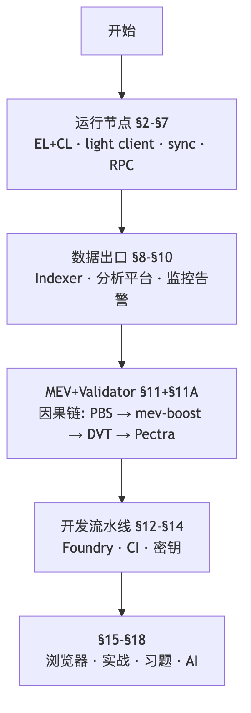
每段开头一句话讲清楚"前一段留下什么问题、本段如何解"。配置堆（YAML/Docker/CI）放在每段末尾的"复制即用"小节。
部署一行 ERC20 之后才开始的事：查余额要 RPC 端点；转账历史要 indexer 解码 Transfer 写库；攻击发生要告警叫醒工程师；看 trace 要 archive 节点；修复要 CI 跑测试 + 多签转 owner + verify 上链。合约 5%，基础设施 95%。
教材其余部分围绕四个失败模式组织：
| 失败模式 | 工程后果 | 对应章节 |
|---|---|---|
| 可用性 | 节点 lag / RPC throttle，用户看到旧余额 | §2-§7（节点 + RPC） |
| 可信性 | 单一 RPC 端点返回假 state | §5（light client） |
| 可观测性 | 攻击发生 30 秒后才 oncall 知道 | §10（监控告警） |
| 运维成本 | archive 自建 ¥15000/年，云上 ¥40000/年 | §2.3 + §7.3（成本对照） |
2024 年某 30M TVL DeFi 项目 5 个 Solidity 工程师 0 个 SRE，免费 RPC 高峰被 throttle 上百次/小时。智能合约工程师不是 SRE 的替代品。
| 类型 | 存储数据 | 查询能力 | 信任模型 | 典型用途 | 2026-04 mainnet 磁盘 |
|---|---|---|---|---|---|
| Full | 最近 ~128 块完整状态 + 全历史 header | 仅 latest 状态 | 自主验证 | RPC / 出块 / 中继 | reth ~700 GB, geth ~1.2 TB |
| Archive | 全部历史状态 + 全 trace | 任意区块 / debug_trace / eth_call any block | 自主验证 | indexer / 浏览器 / DeFi 分析 | reth ~2.5 TB, erigon ~2 TB, geth ~18-20 TB |
| Light | 仅 beacon header | 通过 merkle proof 校验 untrusted RPC | 信 sync committee 多数 | 钱包 / 移动端 / IoT / 浏览器 | <1 GB |
archive 的 18-20 TB 是 geth 的数字 (trie-based)；reth/erigon 用"静态文件 + 增量索引"，archive 只要 2-2.5 TB。
快速选型：前端要最新数据 → full node；indexer / 浏览器 / holder 排行 → archive node；钱包 / 移动端 → light client（§5）。
| 组件 | 型号 | 价格 (¥) | 注意 |
|---|---|---|---|
| CPU | AMD Ryzen 7 7700X (8C16T, 65W) | 1900 | 不要超频, 节点要长跑 |
| 主板 | ASRock B650M Pro RS | 1100 | 双 NVMe 槽 (一块系统一块数据) |
| 内存 | DDR5-5600 64 GB | 2200 | full 32 GB 够; archive 建议 64 GB |
| 系统盘 | NVMe 1 TB Samsung 990 | 600 | 仅 OS + monitoring |
| 数据盘 (full) | NVMe 4 TB Samsung 990 Pro | 1700 | TBW ~2400, 5-7 年寿命 |
| 数据盘 (archive) | NVMe 8 TB Crucial T700 | 4500 | TBW ~4800, 必须企业级 / 高端 TLC |
| 电源 | 850W 80+ Gold 模组 | 700 | 富余, 静音 |
| 散热 | 利民 PA120 SE 风冷 | 200 | 风冷足够 65W TDP |
| 机箱 | 联力 LANCOOL 216 | 500 | 大风道, 长时间运行 |
| 合计 (full) | ¥8900 | ||
| 合计 (archive) | ¥11700 | 仅升级数据盘 |
| 组合 (Mainnet) | EL sync | CL sync | EL 磁盘 | CL 磁盘 |
|---|---|---|---|---|
| reth v2.0 + lighthouse v8.1 | 4.5 h | 6 min | 700 GB | 120 GB |
| geth v1.16 + lighthouse v8.1 | 7.5 h | 6 min | 1.2 TB | 120 GB |
| reth archive + lighthouse | 14 h | 6 min | 2.5 TB | 120 GB |
| erigon 3 archive + lighthouse | 36 h | 6 min | 2.0 TB | 120 GB |
| geth archive + lighthouse | 7 d+ | 6 min | 18 TB | 120 GB |
第一次跑 mainnet sync 一定 disable swap (swapoff -a) 并设 vm.swappiness=1。swap thrash 会让 sync 时间从 4.5h 涨到 24h。
| 方案 | 一次性 | 月度 | 一年总 | 适合 |
|---|---|---|---|---|
| 自建 full + 自建 colo | ¥8900 | ¥180 | ¥11000 | 个人 / 小团队 |
| 自建 archive + colo | ¥11700 | ¥210 | ¥14200 | indexer / 协议 |
| Alchemy Growth | 0 | ¥1450 | ¥17400 | 早期 / MVP |
| Alchemy Scale | 0 | ¥7200 | ¥86000 | 中等流量 dApp |
| AWS i4i.2xlarge (8 vCPU + 64GB + 1.875TB NVMe) | 0 | ¥3500 | ¥42000 | 完全云上 |
合并后 EL（执行层）和 CL（共识层）必须配对运行，通过 engine API（8551，JWT 鉴权）通信。EL 负责交易执行 + state + JSON-RPC；CL 负责 PoS 信标链、attestation/proposal、light client 服务。两者职责不重叠，但单独跑都没意义——不同客户端不一样的事是架构权衡，下面用一张表讲完。
| EL | 语言 | State DB | EVM | 历史策略 | 主流市占 | archive 磁盘 (2026-04) | 卖点 / 痛点 |
|---|---|---|---|---|---|---|---|
| geth | Go | LevelDB / Pebble + snapshot | Native Go | trie 全保存 | ~50% | ~18-20 TB | 兼容性最强 / archive 巨大 |
| reth | Rust | MDBX + Static Files V2 | revm | 静态文件 + 增量索引 | ~8% (上升最快) | ~2.5 TB | 1.7 Gigagas/s / 团队需读 Rust |
| erigon | Go | MDBX 平面状态 | Native Go | 平面历史 + 按需重算 trie | ~7% | ~2 TB | archive 最省 / eth_getProof 慢 |
| nethermind | C# .NET | RocksDB Halfpath | Native C# | trie + plugin | ~25% | ~12 TB | ARM 友好 (RPi 5) / Coinbase 大量采用 |
| besu | Java | RocksDB / Bonsai V2 | Native Java | flat state + diff 链表 | ~10% | ~6 TB | Apache 2.0 / 联盟链 IBFT/QBFT |
三种存储范式：MPT 全保存（geth, archive 巨大）；平面 + 按需重算（erigon, archive 最省，但 trace 慢）；flat + diff（reth Storage V2、besu Bonsai V2，平衡磁盘与延迟）。
reth 2.0（2026-04）的两个关键变化——去掉 plain state 双写、historical changesets 移到 append-only static files——把 trie 计算从 200ms 降到 < 50ms。这是它能跑 1.7 Gigagas peak block 的根因。
geth 风格（trie 全保存）vs reth Storage V2（hashed state + static files）vs erigon 平面历史（按需重算 trie）：
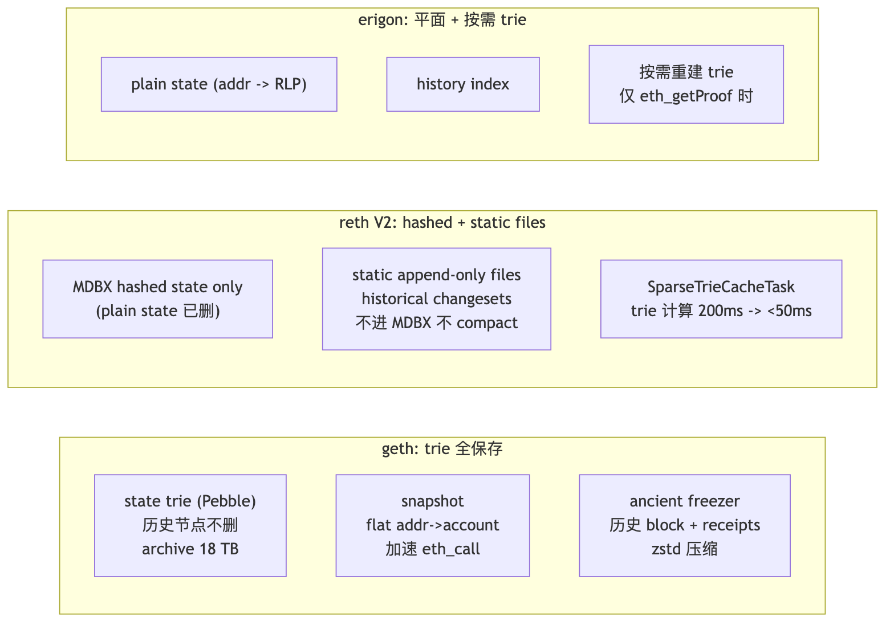
reth staged sync 把同步拆成 headers → bodies → sender recovery → execution（revm）→ hashing → merkle → tx lookup 七阶段，每阶段独立 ETL、可重试、可并行——比 geth 快 1.5-2x。
来源: Paradigm Reth 2.0 Release (2026-04), go-ethereum releases
测试机: Hetzner AX52 (Ryzen 7 7700X / 64GB DDR5 / 2× Samsung 990 Pro 4TB / 1Gbps), CL = lighthouse v8.1.3.
| 指标 | reth v2.0 | geth v1.16.7 | nethermind | besu (Bonsai) | erigon 3 (archive only) |
|---|---|---|---|---|---|
| Fresh sync 时间 (full) | 4.5 h | 7.5 h | 6.5 h | 8 h | N/A |
| Fresh sync 时间 (archive) | 14 h | 7 d+ | 36 h | 48 h | 36 h |
| Steady-state 磁盘 (full) | 700 GB | 1.2 TB | 1.4 TB | 1.5 TB (Bonsai) | N/A |
| Steady-state 磁盘 (archive) | 2.5 TB | 18 TB | 12 TB | 6 TB (Bonsai V2) | 2.0 TB |
| Idle 内存 | 8 GB | 12 GB | 14 GB | 16 GB | 20 GB |
| Peak 内存 (重负载 RPC) | 16 GB | 24 GB | 28 GB | 32 GB | 40 GB |
eth_call p99 (本地) |
8 ms | 15 ms | 20 ms | 25 ms | 30 ms |
eth_getLogs 1k 块 p99 |
80 ms | 220 ms | 280 ms | 350 ms | 60 ms |
debug_traceTransaction p99 |
200 ms | 350 ms | 500 ms | 650 ms | 800 ms (要重算 trie) |
| Block import p50 | 40 ms | 180 ms | 220 ms | 300 ms | 250 ms |
| 1.7 Gigagas 块 (peak) 持久化 | 400 ms | 失败 / OOM | 慢 (5+ s) | 慢 | 不支持 |
| 场景 | 首选 | 备选 |
|---|---|---|
| 自建 RPC 给前端 | reth full | geth full |
| 公共 RPC 商 / 大厂 staking | nethermind / besu | reth |
| Indexer 后端 | reth archive | erigon 3 |
| Token holder 分析 / Dune 风格 | erigon archive | reth archive |
| 树莓派 / IoT / 家庭节点 | nethermind | reth |
| 联盟链 / 企业 | besu | nethermind |
上表 "1.7 Gigagas 块" 指 Pectra/Glamsterdam 后预计的 peak block。reth v2 的 SparseTrieCacheTask 是目前唯一在 commodity 硬件上 400ms 内能完成 state root 计算的客户端。
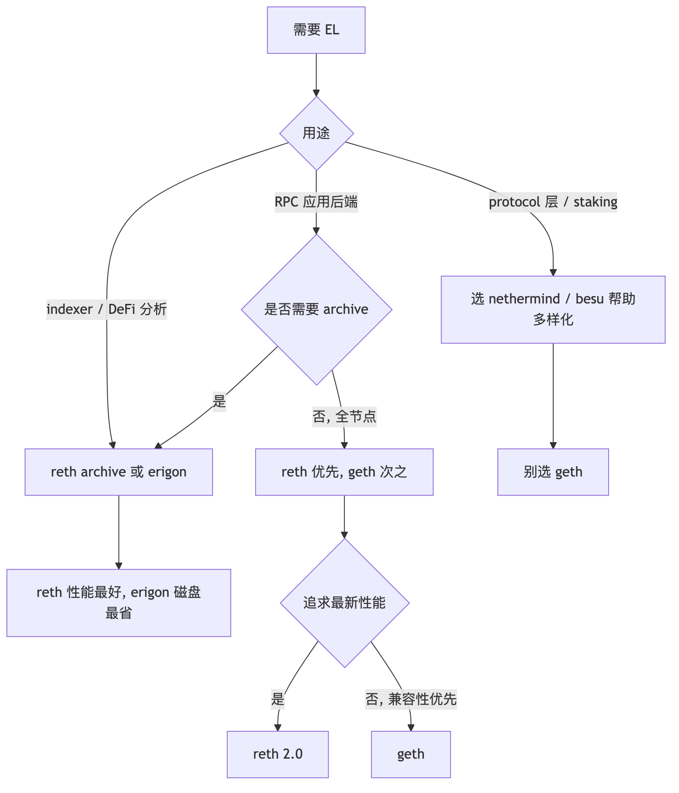
client diversity 是协议安全核心：geth 占 51%+ 时若出 bug，错误链会被视为"多数真理"。新部署优先 reth/nethermind/besu 反而帮整个网络。
| CL | 语言 | 市占 | 内存 | 磁盘 | sync (checkpoint) | peer 数 |
|---|---|---|---|---|---|---|
| lighthouse | Rust | ~33% | 2-4 GB | ~120 GB | 2-5 min | 60-80 |
| prysm | Go | ~38% | 4-8 GB | ~150 GB | 5-15 min | 40-60 |
| teku | Java | ~18% | 4-8 GB (off-heap) | ~80 GB | 3-8 min | 80-100 |
| nimbus | Nim | ~6% | <1 GB | ~100 GB | 5-10 min | 100-150 |
| lodestar | TypeScript | ~5% | 4-6 GB | ~110 GB | 8-15 min | 25 |
来源: migalabs Analysis of Ethereum2 Consensus Clients, coincashew Disk Usage by Client
速记差异：lighthouse v8.1（Rust，Fulu ready，hierarchical state diffs 让磁盘 I/O 降 4x，eth-docker 默认）/ prysm（Go，内置 Web UI，内存吃得多）/ teku（Java，ConsenSys + Splunk 企业集成）/ nimbus（Nim，<1 GB 内存，RPi 唯一选择）/ lodestar（TS，ChainSafe，浏览器 light client）。
来源: Sigma Prime - Lighthouse releases, migalabs CL benchmarks
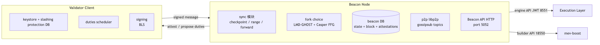
同一组 keystore 跑两个 VC 进程最容易触发 slashing。slashing protection DB 必须 single-source-of-truth。
| 场景 | EL | CL |
|---|---|---|
| 默认 / 大众 | reth | lighthouse |
| 客户端多样化 | nethermind / besu | lighthouse / teku |
| 树莓派家庭节点 | nethermind | nimbus |
| JS 生态 | reth | lodestar |
自建 EL+CL 信任最强，但移动端和浏览器装不下 700 GB。Light client 通过 sync committee 签名 + merkle proof 校验 把 untrusted RPC 转成 trustless RPC——MetaMask 默认走 Infura，给假数据无从发现，这是要解决的问题。
| 项目 | 语言 | 特点 | 状态 |
|---|---|---|---|
| Helios (a16z) | Rust | 多链 (Ethereum + OP Stack), 启动 2 秒, 编译 WASM 可跑浏览器 | 主流, 推荐 |
| nimbus light | Nim | nimbus 项目内置 light mode, 资源极省 | 较冷门, mainnet ready |
| Lodestar light | TypeScript | 浏览器内 light client, ChainSafe 维护 | dev / preview |
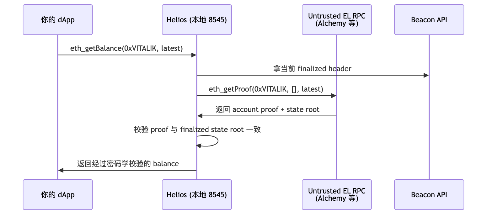
信任根：sync committee 多数（512 个 validator 中 ≥342 签名）。伪造需盗 342 个 validator 私钥、窗口仅 ~27 小时。
# 推荐安装方式: heliosup 自动管理 release
curl https://raw.githubusercontent.com/a16z/helios/master/heliosup/install | bash
source ~/.bashrc
heliosup # 装最新 stable
helios --version # 确认安装成功
或用 cargo:
cargo install --git https://github.com/a16z/helios --tag v0.8.0 helios-cli
# 来源 1: ethpandaops
A=$(curl -s https://sync-mainnet.beaconcha.in/checkpointz/v1/beacon/slots | jq -r '.data.finalized.block_root')
# 来源 2: 自己的 lighthouse beacon node (最可靠)
B=$(curl -s http://localhost:5052/eth/v1/beacon/headers/finalized | jq -r '.data.root')
# 比较
if [ "$A" = "$B" ]; then
echo "Trusted checkpoint: $A"
CHECKPOINT=$A
else
echo "checkpoint 不一致, 拒绝启动"
exit 1
fi
helios ethereum \
--network mainnet \
--consensus-rpc https://www.lightclientdata.org \
--execution-rpc $UNTRUSTED_ALCHEMY \
--checkpoint $CHECKPOINT \
--rpc-bind-ip 127.0.0.1 \
--rpc-port 8545 \
--data-dir ~/.helios &
# 等约 2-5 秒, Helios 跟上 head
sleep 5
# 验证 Helios 已就绪
curl -s -X POST -H "Content-Type: application/json" \
--data '{"jsonrpc":"2.0","method":"eth_blockNumber","params":[],"id":1}' \
http://127.0.0.1:8545 | jq
// viem / wagmi 的 transport 指向 Helios, 用户无感
const config = createConfig({
chains: [mainnet],
transports: {
[mainnet.id]: http(process.env.HELIOS_URL ?? process.env.ALCHEMY_URL),
},
});
完整验证脚本见 code/05-helios-light-client/verify-balance.ts.
| 维度 | Helios | 自建 reth full | Alchemy 直连 |
|---|---|---|---|
| 启动到可用 | 2-5 s | 4-6 h sync | 0 s |
| 内存 | 100 MB | 32 GB | 0 (托管) |
| 磁盘 | 几 MB | 700 GB | 0 |
| 单 query latency | 50-200 ms (要拿 proof + 验证) | 5-20 ms | 30-100 ms |
| 信任 | sync committee 多数 | 完全自主 | 完全信任厂商 |
| 适合 | 钱包 / 浏览器 / 移动端 | 后端 / 高频应用 | MVP / 不在意信任 |
Helios 支持 Ethereum mainnet、OP Stack (Optimism / Base, 通过 derive 关系信任 L1)、其他 EVM (Polygon / Arbitrum, 实验性).
helios opstack \
--network optimism \
--execution-rpc $OP_ALCHEMY \
--rpc-port 8546 &
| 模式 | 工作方式 | 用时 | 信任假设 |
|---|---|---|---|
| full sync | 从 genesis 重放每一笔交易, 自己重建 state | 数周 | 仅信 P2P 多数 |
| snap sync (默认) | 抓最近某个 finalized block 的 state snapshot, 之后从该点 full sync | 4-12 h | 信 snapshot 提供方 ~16 个区块 |
| archive sync | full sync + 保留全部中间 state | 数周-月 | 仅信 P2P 多数 |
--checkpoint-sync-url=https://checkpoint-sync.sepolia.ethpandaops.io
给 CL 一个最近 finalized state root, 秒级同步. 不开则从 genesis 重放 (几天). 可信来源: mainnet (beaconcha.in / ethpandaops), sepolia/holesky (ethpandaops). 多源交叉验证更安全.
测试机: Hetzner AX52 (Ryzen 7 7700X / 64 GB / 990 Pro 4 TB / 1 Gbps).
| 组合 (Sepolia) | EL sync | CL checkpoint sync | EL 磁盘 | CL 磁盘 |
|---|---|---|---|---|
| reth v2.0 + lighthouse v8.1 | 28 min | 4 min | 145 GB | 38 GB |
| geth v1.16 + lighthouse v8.1 | 51 min | 4 min | 220 GB | 38 GB |
| nethermind + teku | 38 min | 7 min | 180 GB | 24 GB |
Mainnet 数据见 2.3 节表格 (同测试机).
5000 用户 peak QPS 50000 时 Alchemy free tier 直接挂——三条出路：升级 Growth tier ($199/月)、多账户 + 网关 fallback、自建。本节按"先选托管商 → 用网关聚合 → 必要时自建"展开。
| 提供商 | 计费模式 | archive | trace_* | debug | 月度免费 | 单 eth_call 等价成本 (相对) | 特殊优势 |
|---|---|---|---|---|---|---|---|
| Alchemy | CU (eth_call=26) | yes | yes | yes | 300M CU | 26x | Enhanced API (NFT/transfer summary) |
| Infura | request + 系数 (eth_call=80) | yes | partial | partial | 6M req | 80x | ConsenSys 系, MetaMask 默认 |
| QuickNode | credit (eth_call=20) | yes | yes | yes | 10M credit | 20x | SOC1/SOC2/ISO27001 全认证 |
| Ankr | CU (eth_call=200) | yes | yes | yes | 30M CU | 200x | gRPC plan 降到 10x |
| dRPC | flat $6/1M req | yes | yes | yes | 100k req | flat | 重 trace/getLogs 性价比之王 |
| Tenderly Gateway | request | yes | yes | yes | 25M | 中等 | 与 Tenderly Alert / Devnet 联动 |
| Chainstack | request | yes | yes | yes | 3M | 中等 | 多链强 (50+), enterprise SLA |
| Blockdaemon | enterprise SLA | yes | yes | yes | N/A | N/A | 机构 / 合规, 24/7 phone support |
| NodeReal | request (BSC/Opbnb 强) | yes | yes | yes | 30M | 中等 | 二线公链覆盖最全 |
| GetBlock | request | yes | yes | yes | 50k | 中等 | EVM + Bitcoin + Solana 统一 API |
| Validation Cloud | enterprise | yes | yes | yes | demo only | N/A | DeFi 专属 SLA |
| Stackup | bundler + RPC | partial | partial | partial | 1M | N/A | 4337 Bundler 主推, 同时提供 RPC |
| Rivet | request | yes | yes | yes | 20k req | 中等 | 隐私优先, 不记录请求 |
公共 / 公益 RPC:
| 公益 RPC | 维护方 | 特点 |
|---|---|---|
| 1RPC | Automata | 隐私 (TEE 隔离), 默认免费 |
| Llamarpc | DefiLlama | 完全免费, 多 RPC fallback 聚合 |
| publicnode.com | Allnodes | 多链免费, 无注册 |
| Cloudflare ETH gateway | Cloudflare | 免费, 限流较严 |
来源: Dwellir 2026 Best RPC Providers, QuickNode Best RPC 2026, Chainnodes pricing
reth + lighthouse 自建 ¥10000-15000/年 vs Alchemy Growth ¥17000/年. 自建额外优势: 数据可信、无 rate limit、archive/trace 不限次、隐私 (托管商能看到所有查询地址).
MEV searcher 必须自建：每次 mempool 查询托管商都可见。
| 网关 | 特点 |
|---|---|
| eRPC (开源) | rate limit / cache / failover / multi-upstream, 用 Go, 配置 yaml |
| dRPC Gateway (托管) | 同上, 商业 SaaS |
| Tenderly Gateway | 集成 Alert 和 Devnet |
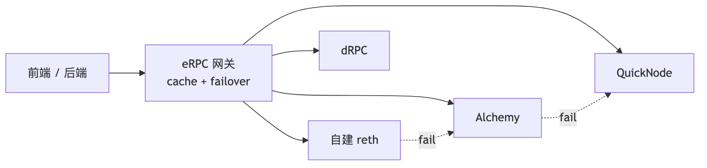
见 code/01-reth-lighthouse-sepolia/nginx/nginx.conf. 三层: TLS (Let's Encrypt) / basic auth (htpasswd) / limit_req_zone (50 req/s, 突发 100).
code/01-reth-lighthouse-sepolia/docker-compose.full.yml. 关键设计:
--http.api 不加 admin, 30303 TCP+UDP 防火墙放行.--disable-deposit-contract-sync.docker compose -f docker-compose.full.yml up -d
docker compose logs -f reth # 等 EL sync
docker compose logs -f lighthouse # 等 CL sync
services:
reth:
image: ghcr.io/paradigmxyz/reth:v2.0.0
container_name: reth
restart: unless-stopped
stop_grace_period: 5m # reth 关机要 flush MDBX, 至少 5 min
networks: [eth]
expose: # 仅 docker network 内可见, 不暴露 host
- "8545"
- "8546"
- "8551" # engine API, JWT 鉴权, 仅给 lighthouse
- "9001" # prometheus metrics
ports:
- "30303:30303/tcp" # P2P, 必须开
- "30303:30303/udp" # discovery, 必须开
volumes:
- reth-data:/root/.local/share/reth
- ./jwt:/root/jwt:ro # JWT secret, ro 挂载
command:
- node
- --chain=sepolia # 主网换 mainnet
- --datadir=/root/.local/share/reth
- --metrics=0.0.0.0:9001
- --authrpc.addr=0.0.0.0
- --authrpc.port=8551
- --authrpc.jwtsecret=/root/jwt/jwt.hex
- --http
- --http.addr=0.0.0.0
- --http.port=8545
- --http.api=eth,net,web3,txpool,debug,trace # 不要加 admin!
- --http.corsdomain=*
- --ws
- --ws.addr=0.0.0.0
- --ws.port=8546
- --ws.api=eth,net,web3
- --port=30303
lighthouse:
image: sigp/lighthouse:v8.1.3
container_name: lighthouse
restart: unless-stopped
depends_on: [reth]
networks: [eth]
expose: ["5052", "5054"]
ports:
- "9000:9000/tcp"
- "9000:9000/udp"
volumes:
- lh-data:/root/.lighthouse
- ./jwt:/root/jwt:ro
command:
- lighthouse
- bn
- --network=sepolia
- --datadir=/root/.lighthouse
- --execution-endpoint=http://reth:8551
- --execution-jwt=/root/jwt/jwt.hex
- --checkpoint-sync-url=https://checkpoint-sync.sepolia.ethpandaops.io
- --disable-deposit-contract-sync
- --http --http-address=0.0.0.0 --http-port=5052
- --metrics --metrics-address=0.0.0.0 --metrics-port=5054
- --port=9000 --discovery-port=9000
- --target-peers=80
nginx:
image: nginx:1.27-alpine
container_name: nginx-rpc
restart: unless-stopped
depends_on: [reth]
networks: [eth]
ports: ["443:443"]
volumes:
- ./nginx/nginx.conf:/etc/nginx/nginx.conf:ro
- ./nginx/htpasswd:/etc/nginx/htpasswd:ro
- ./nginx/certs:/etc/nginx/certs:ro
prometheus:
image: prom/prometheus:v2.55.0
container_name: prometheus
restart: unless-stopped
networks: [eth]
expose: ["9090"]
volumes:
- ./prometheus/prometheus.yml:/etc/prometheus/prometheus.yml:ro
- prom-data:/prometheus
command:
- --config.file=/etc/prometheus/prometheus.yml
- --storage.tsdb.retention.time=30d
grafana:
image: grafana/grafana:11.2.0
container_name: grafana
restart: unless-stopped
depends_on: [prometheus]
networks: [eth]
ports: ["127.0.0.1:3000:3000"]
environment:
GF_SECURITY_ADMIN_PASSWORD: ${GRAFANA_ADMIN_PASSWORD:-changeme}
volumes:
- grafana-data:/var/lib/grafana
- ./grafana/dashboards:/etc/grafana/provisioning/dashboards:ro
- ./grafana/datasources:/etc/grafana/provisioning/datasources:ro
networks:
eth:
driver: bridge
volumes:
reth-data:
lh-data:
prom-data:
grafana-data:
# 1. 关 swap (节点 OOM 比 swap thrash 好处理)
sudo swapoff -a
sudo sed -i.bak '/ swap / s/^/#/' /etc/fstab
# 2. fd 上限提到 65535
ulimit -n 65535
echo "* soft nofile 65535" | sudo tee -a /etc/security/limits.conf
echo "* hard nofile 65535" | sudo tee -a /etc/security/limits.conf
# 3. 文件系统挂载: noatime + nodiratime 减少 I/O
sudo mount -o remount,noatime,nodiratime /var/lib/reth
# 4. TCP 缓冲区调大, P2P 不丢包
cat <<EOF | sudo tee /etc/sysctl.d/99-reth.conf
net.core.rmem_max = 134217728
net.core.wmem_max = 134217728
net.ipv4.tcp_rmem = 4096 87380 67108864
net.ipv4.tcp_wmem = 4096 65536 67108864
net.core.netdev_max_backlog = 16384
fs.file-max = 100000
vm.swappiness = 1
vm.dirty_ratio = 5
vm.dirty_background_ratio = 2
EOF
sudo sysctl --system
reth node \
--chain mainnet \
--port 30303 \
--discovery.port 30303 \
--max-outbound-peers 100 \ # 默认 64, 调到 100 提升出块
--max-inbound-peers 200 \
--rpc.max-connections 5000 \ # 默认 500, 高负载调到 5000
--rpc.gascap 50000000 \ # eth_call gas 上限, debug 时调高
--txpool.max-pending-txns 50000 \ # mempool 容量
--engine.persistence-threshold 2 \ # 每 2 块持久化一次, 平衡 I/O 与延迟
--color always
| 指标 | 警戒线 | 告警 |
|---|---|---|
reth_chain_height lag (vs CL beacon_head_state_slot) |
> 5 块 | warning |
reth_chain_height lag |
> 30 块 | critical |
process_resident_memory_bytes |
> 60 GB | warning |
reth_rpc_request_duration_seconds p99 |
> 2 s | warning |
node_filesystem_avail_bytes / size |
< 20% | warning |
node_filesystem_avail_bytes / size |
< 5% | critical (磁盘耗尽 = sync 卡死) |
| disk write IOPS | > 80% NVMe spec | warning |
nethermind 的 JsonRpcBenchmark 工具能跑标准化压测:
docker run --rm -it \
--network host \
nethermind/jsonrpcbench \
--url http://localhost:8545 \
--duration 60 \
--threads 16 \
--method eth_call
实测 (Ryzen 7 7700X, mainnet head):
| 客户端 | eth_call qps | eth_getLogs (100 块) qps | debug_traceCall qps |
|---|---|---|---|
| reth v2.0 | 12000 | 800 | 50 |
| geth v1.16 | 7000 | 350 | 25 |
| nethermind | 5500 | 300 | 20 |
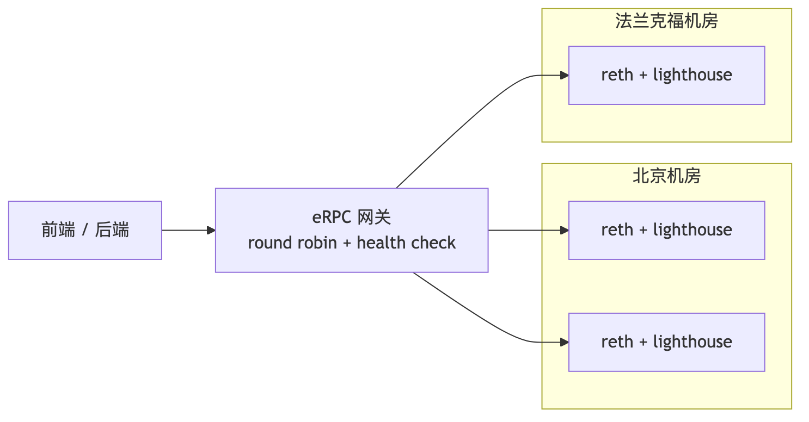
至少两个机房 (跨 ASN/ISP). eRPC 自带 health check + circuit breaker (lag > 30 块自动剔除). cache (eth_call 30s, eth_chainId 永久) 可挡 ~80% 请求.
eth_getLogs 拉 30 天（25 万块）秒级返回不可能；indexer = 监听 logs → 解码 → 写库 → 暴露 GraphQL/SQL。The Graph hosted-service 2024-06-12 已关停，新项目要在五条路径里选：
| 方案 | 类型 | 部署 | 速度 (Uniswap V2 Factory bench) | 链支持 | 何时选 |
|---|---|---|---|---|---|
| The Graph (decentralized) | hosted + 去中心化 | Subgraph Studio + 网络 | ~158 min | 60+ | 老项目迁移 / 享受去中心化 |
| Ponder 0.10 | 自托管 TS 框架 | Node.js + Postgres | ~60 min (单 RPC), 4 min (本地 reth) | EVM 全部 | TS 团队 / 后端 / 类型安全 |
| Goldsky | hosted, subgraph + Mirror 流 | 控制台 / CLI | ~10 min | 150+ | 需 webhook / 流到 BigQuery |
| Envio HyperIndex | hosted + 自托管, 基于 HyperSync | TS/JS | ~1 min | 70+ EVM | 极端高吞吐 / event 密集 |
| Subsquid (SQD) | 去中心化 query 网络 + Squid SDK | TS, Postgres + GraphQL | ~5 min | 100+ EVM/Substrate/Solana | 多链 / 历史回填 |
来源: Envio 2026 Indexer Benchmarks, Chainstack Hosted Subgraphs
老 The Graph hosted URL 全部死链；新项目走 decentralized network + Subgraph Studio，TS 选 Ponder，极速选 Envio，多链选 Goldsky/SQD。
来源: The Graph Sunsetting Hosted Service, Envio 2026 Indexer Benchmarks
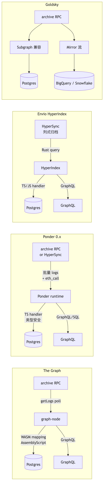
Ponder 0.11+ 内置 Drizzle ORM。老 db.Account.create API 已迁移到 db.insert(accounts) query builder。
02-ponder-erc20-indexer/
├── package.json # @ponder/core ^0.10, viem 2, hono 4
├── ponder.config.ts # 链 + RPC + 合约 + ABI + startBlock
├── ponder.schema.ts # onchainTable + relations + primaryKey
├── abis/erc20Abi.ts # 仅保留 Transfer 事件
├── src/index.ts # ponder.on("USDC:Transfer", ...)
├── docker-compose.yml # postgres 16
└── .env.example # PONDER_RPC_URL_1 + DATABASE_URL
export default createConfig({
database: { kind: "postgres", connectionString: process.env.DATABASE_URL },
networks: {
mainnet: { chainId: 1, transport: http(process.env.PONDER_RPC_URL_1) },
},
contracts: {
USDC: {
network: "mainnet",
abi: erc20Abi,
address: "0xA0b86991c6218b36c1d19D4a2e9Eb0cE3606eB48",
startBlock: 22300000, // 演示用近一周
},
},
});
startBlock 一定不要从 0 开始。USDC 部署在 6082465, 但全量回填要数小时。实战通常从"今天往前 30 天"开始, 用 cast block-number 反推区块号。后续如要补全历史用 backfill 工具。
onchainTable("account", t => ({ ... })) 定义表primaryKey({ columns: [tx, idx] })relations(account, ({ many }) => ({ sent: many(transferEvent) })) 让 GraphQL 自动 joinponder.on("USDC:Transfer", async ({ event, context }) => {
const { from, to, value } = event.args;
await context.db.transferEvent.insert({ /* 流水 */ });
// upsert 双方账户余额
if (from !== ZERO_ADDRESS) {
await context.db.account
.insert({ address: from, balance: -value, transferCount: 1 })
.onConflictDoUpdate(row => ({
balance: row.balance - value,
transferCount: row.transferCount + 1,
}));
}
});
| RPC 后端 | 起始区块 -> head (~7 天) | 备注 |
|---|---|---|
| Alchemy free tier | 22 min | 受 rate limit 限制 |
| 自建 reth archive (本机) | 4 min | viem batch + 大 RPC 池 |
| Envio HyperSync | 1 min | Ponder 0.11+ 可切 HyperSync transport |
# Docker 化
docker build -t my-indexer:0.1 .
# Postgres 用托管 (RDS / Neon / Supabase), 别自建 (备份/PITR 麻烦)
DATABASE_URL=postgres://... ponder start
# 暴露 GraphQL 端口 42069 走 nginx + auth
Ponder 把 cursor 写在 Postgres _ponder_status 重启自动续上, 但必须配 PITR: Postgres 损坏则从 startBlock 重跑.
mainnet 偶尔 1-2 块 reorg, OP Stack 每天可见.
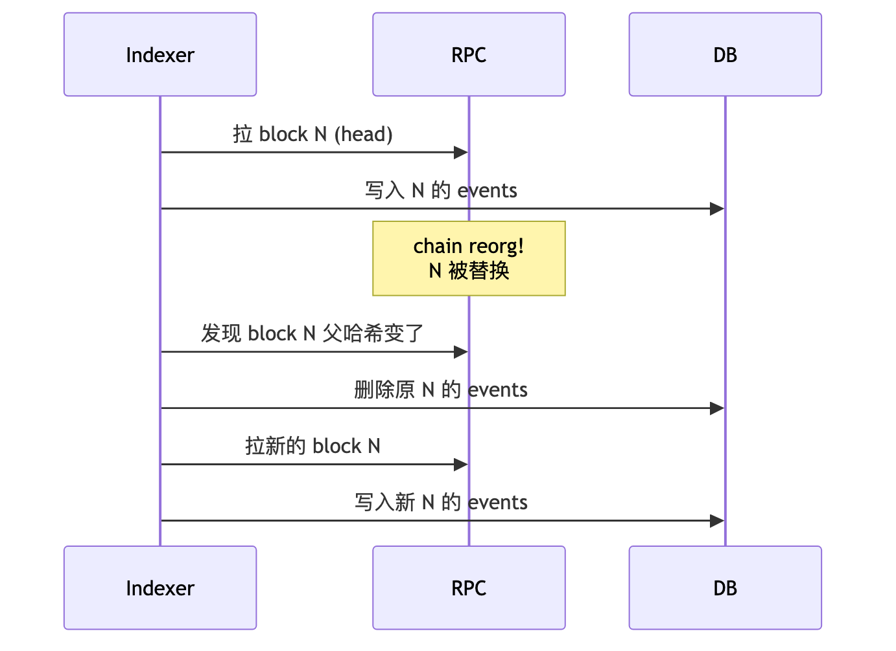
各 indexer reorg 策略:
| 方案 | reorg 策略 | 你需要做什么 |
|---|---|---|
| The Graph | 自动, 默认 finality 50 块 | 不用关心, 但 GraphQL 返回的非 finalized 数据可能反复 |
| Ponder | 自动, head ~5 块以内自动 rollback | 不用关心 |
| Envio HyperIndex | 自动, 由 HyperSync 维护 | 不用关心 |
| Subsquid | 默认在 finalized block 处理, 不暴露 head | 不用关心, 但 latency 高 |
| Goldsky Mirror | 取决于配置, "real-time" 模式可能见到 reorg | 在下游消费时 dedupe |
自己写 indexer (不用框架, 直接 eth_getLogs polling) 时, 一定要存 block_hash, 每个 block 检查 parent_hash 是否仍指向你已写的 block。不一致就 rollback。这是 0day bug 高发区, 推荐用现成框架。
| 维度 | 自托管 (Ponder, Subsquid SDK, graph-node) | 托管 (The Graph network, Goldsky, Envio cloud) |
|---|---|---|
| 启动成本 | 中: 配 archive RPC + Postgres + 部署 | 低: dashboard 一键 |
| 月度成本 | 节点 ¥1000 + Postgres ¥500 + 应用 ¥0-500 | $50-500 (按 query) |
| 性能上限 | 完全靠你 | 厂商基础设施保底 |
| 私密 | 强 (你的 RPC 调用不暴露) | 弱 (索引 schema 厂商可见) |
| reorg / 升级 | 需要你测 | 厂商负责 |
| 适合 | 中长期生产协议, 数据敏感 | MVP, 周末黑客松, 小团队 |
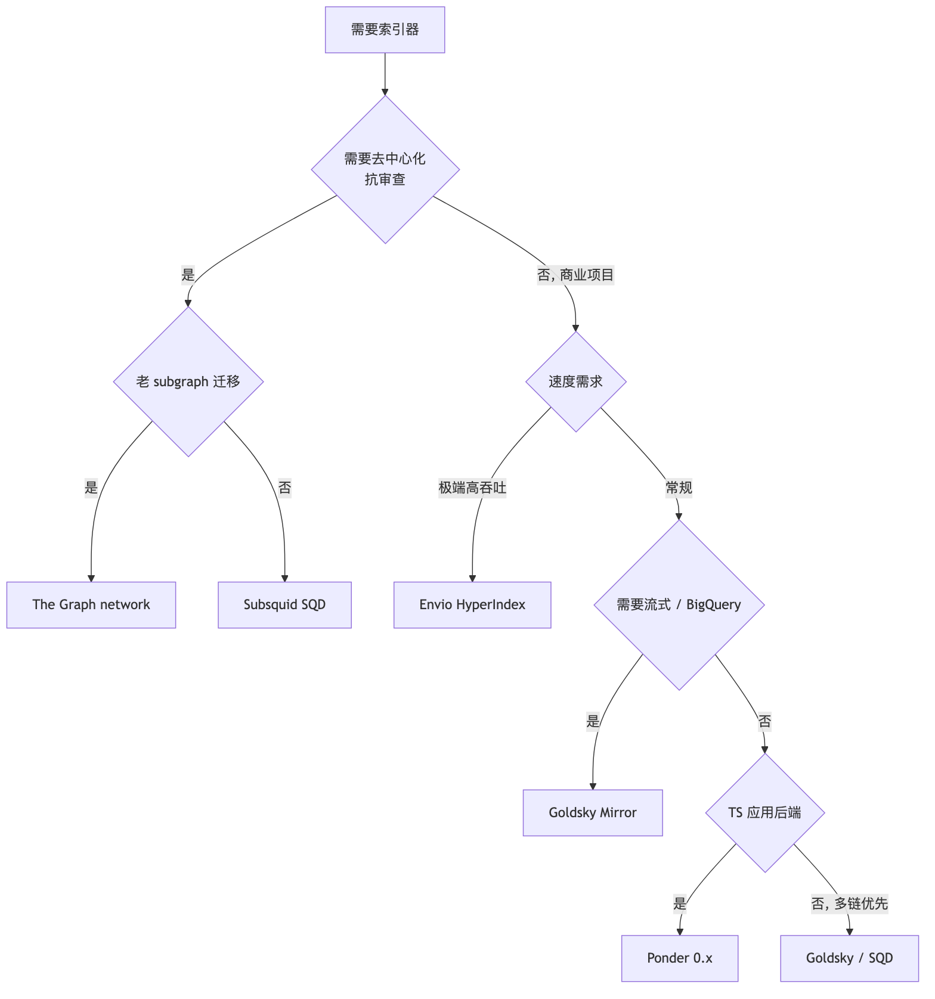
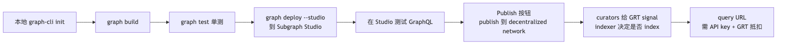
# 1. 初始化
graph init --studio my-defi-subgraph
cd my-defi-subgraph
# 2. 本地编译 + 单元测试
graph codegen
graph build
graph test
# 3. 部署到 Subgraph Studio (dev sandbox, 100k 免费 query/月)
graph auth $SUBGRAPH_STUDIO_DEPLOY_KEY
graph deploy my-defi-subgraph --version-label 0.0.1
# 4. 在 Studio Web UI 点 "Publish to network"
# 会触发链上 tx, 记得有 ETH gas
# 5. 拿到 query URL (含 API key)
# https://gateway.thegraph.com/api/<API_KEY>/subgraphs/id/<SUBGRAPH_ID>
| 场景 | 操作 | 影响 |
|---|---|---|
| 仅修 mapping bug, schema 不变 | bump 0.0.1 -> 0.0.2 | indexer 重新 sync, 老 query 不影响 |
| 改 schema (新增字段) | bump 0.1.0 -> 0.2.0 | indexer 重新 sync, 老 client 仍可读 |
| 改 schema (删字段 / 改类型) | bump 0.2.0 -> 1.0.0 (breaking) | 必须告知 query 方迁移 |
| 改合约地址 / startBlock | 一定 bump major | 可能要全量 reindex |
Studio 每次 graph deploy --version-label 自动归档上版本。多版本并存要 publish 到 decentralized network。
每个网络独立 subgraph slug, 前端按 chainId 路由.
# subgraph.yaml 顶层
specVersion: 1.0.0
features:
- prune
- non-fatal-errors
indexerHints:
prune: 30000 # 仅保留最近 30000 块的全部 history. 老历史只留聚合
省 50-90% 磁盘, 但 historical 查询不可用.
来源: The Graph - Publishing a Subgraph, Subgraph Studio Versioning
跑同一份 Uniswap V3 swap 索引 (mainnet 30 天历史):
| 平台 | 部署时间 | 全量 reindex 时间 | 查询 p50 latency | 月度成本 (10M query) |
|---|---|---|---|---|
| The Graph network | 5 min (publish + signal) | ~6 h (受 indexer 进度) | 200-400ms | ~$50 (按 GRT) |
| Goldsky Subgraph | 3 min | ~2 h | 80-150ms | $200 (含 webhook) |
| Envio HyperIndex | 5 min | ~15 min (HyperSync) | 50-100ms | $100 (cloud tier) |
| Ponder 自托管 | 10 min (含 Postgres) | ~1 h | 50-100ms | ¥500 (Postgres) |
速度 Envio 一骑绝尘, 成本 Ponder 自托管最低, 抗审查唯一选 The Graph。实战常见做法: 用 Envio / Goldsky 跑生产 + 备份一份 The Graph 上去做 fallback。
§8 indexer 服务 dApp 后端（实时、GraphQL）；分析平台服务数据科学家（离线、SQL/Notebook）。同一份 archive 数据，两种消费方式。
| 平台 | 数据源 | 查询方式 | 免费额度 | 强项 |
|---|---|---|---|---|
| Dune | 多链 archive 抽取 | SQL (DuneSQL = Trino) | dashboard 公开免费, query 限速 | 社区生态最大, dashboard 文化 |
| Flipside | 多链 archive 抽取 | SQL (Snowflake) | 免费, 社区活跃 | 链覆盖广, 教育资源好 |
| Allium | 企业级 archive ETL | SQL + API | enterprise (无免费 tier) | data quality 最高, 用于机构 |
| Footprint Analytics | 多链 + 链下 | SQL + no-code | 免费 dashboard | DeFi/GameFi 模板多, 中文友好 |
| Token Terminal | 协议级 PnL/收入 | API + dashboard | 免费 read | 财务级 metric, IR 投资人友好 |
| DefiLlama | 公开 / 抓取 | API + dashboard | 完全免费 | TVL / yields / fees, 协议级标准 |
| Artemis | 跨链 | dashboard | 部分免费 | 跨链对比, infra metric |
| Nansen | 多链 + 标签 | dashboard + Smart Money 追踪 | 付费 ($150-1500/月) | 链上地址标签库最大 |
| Arkham | 多链 + 实体识别 | dashboard + Intelligence | 部分免费 | 实体识别 (谁是谁), 套利追踪 |
-- 1. 直接读 raw block / tx / logs / traces 表
SELECT block_number, "from", "to", value
FROM ethereum.transactions
WHERE block_time >= now() - interval '1' day
LIMIT 10;
-- 2. Solidity 解码: decoded.event_inputs.<param>
SELECT
evt_block_time,
evt_tx_hash,
varbinary_to_uint256(value) AS amount -- 自动解 uint256
FROM erc20_ethereum.evt_Transfer
WHERE contract_address = 0xa0b86991c6218b36c1d19d4a2e9eb0ce3606eb48 -- USDC
AND evt_block_time >= now() - interval '1' hour;
-- 3. Trino window 函数: rolling 24h volume
SELECT
date_trunc('hour', evt_block_time) AS hr,
sum(varbinary_to_uint256(amount0In) + varbinary_to_uint256(amount0Out)) OVER (
ORDER BY date_trunc('hour', evt_block_time)
ROWS BETWEEN 23 PRECEDING AND CURRENT ROW
) AS rolling_24h_vol
FROM uniswap_v2_ethereum.Pair_evt_Swap
ORDER BY hr DESC;
-- 4. EVM 专用: keccak / abi_decode
SELECT keccak(0x123456) AS hash;
SELECT abi_decode(input, '(address,uint256)') FROM ethereum.transactions LIMIT 1;
| 反模式 | 优化 |
|---|---|
WHERE LOWER(from) = ... |
用 from = 0x... (binary 比较, varbinary 类型) |
WHERE block_time::date = '2025-01-01' |
用 block_time >= TIMESTAMP '2025-01-01' AND < |
SELECT * FROM ethereum.transactions 然后 filter |
用 partition block_number 过滤 |
| 多表 JOIN 不带 partition | 先 WHERE block_number BETWEEN ... 再 JOIN |
# 拿地址的 token holdings
curl https://api.echo.xyz/v1/balances/evm/0xVITALIK \
-H "X-Dune-Api-Key: $KEY"
# 拿 mempool 中地址相关 pending tx
curl https://api.echo.xyz/v1/transactions/evm/pending/0xVITALIK \
-H "X-Dune-Api-Key: $KEY"
| 维度 | Dune | Allium | Footprint |
|---|---|---|---|
| 主用户 | 社区 / dashboard 文化 | 机构 / 合规 | DeFi/GameFi 中文团队 |
| 数据延迟 | 1-3 min | < 1 min (real-time tier) | 5-15 min |
| 链覆盖 | 100+ EVM + Solana + Bitcoin + ... | 130+ EVM | 30+ |
| 数据质量 SLA | 社区 best-effort | enterprise SLA | 中等 |
| Schema | community-curated (有 abstraction layer) | enterprise-curated | mixed |
| API 价格 | $200-2000/月 | $5k-50k/月 | $50-500/月 |
| no-code dashboard | ✓ 强 | ✓ | ✓ 强 |
| 适合 | open dashboard / 个人分析 | 银行 / 交易所 / TradFi | 做 GameFi/Asia 项目 |
Allium 在 reorg 处理上更严谨, 适合给监管报数。Dune 适合产品 & marketing。
监控有两层职责：(1) 节点 / 服务 自身存活（Prometheus + Alertmanager，已在 §7.6.2 metrics 阈值表覆盖）；(2) 合约 / on-chain 行为 监控（攻击、admin 异常、清算飙升）。下面专讲第二层。OpenZeppelin Defender Sentinel 2026-07-01 关停，存量项目要迁——这是 2026 监控选型的最大变量。
| 工具 | 类型 | 控制粒度 | 触发后能做什么 | 适用场景 | 2026-04 状态 |
|---|---|---|---|---|---|
| Tenderly Alert | SaaS | function/event/failed-tx, 参数比较 | webhook/Slack/PagerDuty/邮件/Web3 Action | 自家协议监控 + debug 联动 | 活跃, 主推 AI debug |
| OpenZeppelin Defender Sentinel | SaaS | function/event/参数 | 邮件/Slack/Telegram/Discord/Autotask | 合约 admin / 治理 / 紧急 pause | 2026-07-01 关停, 迁开源 Monitor / Relayer |
| Forta agent | 链上 + bot 网络 | 任意 TS/Python | Finding -> Forta query API / Discord webhook | 全网监控 / 社区 bot 协同 | 活跃 |
| Hypernative | SaaS | AI-driven 异常检测 | webhook / 自动 freeze | 高 TVL 协议 / 桥 | 商业, 2026 主推 |
| Ironblocks | SaaS | rule + ML | webhook / on-chain firewall | DeFi 协议 firewall | 活跃 |
| Cyfrin Wallet Watch | SaaS | 钱包级行为 | 邮件 | 个人 / 小团队 | 2025 上线 |
来源: OpenZeppelin Defender shutdown, Tenderly Alerts docs, Forta SDK
开源替代：openzeppelin-relayer / openzeppelin-monitor（alpha）。Sentinel + Autotask → 自托管 Monitor + Relayer。新项目直接选 Tenderly + Forta，高 TVL 加 Hypernative。
# 把已有 Defender Sentinel 配置迁移到自托管 monitor
services:
oz-monitor:
image: ghcr.io/openzeppelin/openzeppelin-monitor:latest
container_name: oz-monitor
restart: unless-stopped
volumes:
- ./config:/app/config:ro
environment:
- RUST_LOG=info
- METRICS_PORT=8081
ports:
- "127.0.0.1:8081:8081" # prometheus
depends_on: [redis]
redis:
image: redis:7-alpine
restart: unless-stopped
volumes:
- redis-data:/data
volumes:
redis-data:
config/monitors/erc20-pause.yaml:
name: USDC large-withdraw -> Slack
network: ethereum
addresses:
- "0xA0b86991c6218b36c1d19D4a2e9Eb0cE3606eB48"
match_conditions:
events:
- signature: "Transfer(address,address,uint256)"
expression: "value > 1000000000000" # 1M USDC
notifications:
- kind: slack
webhook: ${SLACK_WEBHOOK}
- kind: webhook
url: https://my-pause-bot.example.com/pause
method: POST
headers:
Authorization: "Bearer ${PAUSE_BOT_TOKEN}"
monitor 仅做 detect + dispatch。不要让 monitor 直接掌握 pause 私钥 (单点失败)。
见 code/04-tenderly-alert/tenderly.yaml. 典型 alert: 函数参数阈值 (withdraw > 1M USDC) / OwnershipTransferred 触发 PagerDuty / 30 笔失败 tx/10 min 同一 EOA 探测 bot.
Tenderly 差异化: debug 联动 (alert -> 一键 trace + state diff) / AI calldata 解码 (raw 0xa9059cbb... -> "transfer 100 USDC to 0xabc") / Virtual TestNet (克隆生产 state 做模拟).
| 维度 | anvil --fork | Tenderly Virtual TestNet |
|---|---|---|
| 启动时间 | 1-3 s (本机) | 100 ms (托管, 全球分布) |
| 共享 | 否 | URL 共享给团队, 大家连同一个 fork |
| 持久化 | 进程退出即没 | 持续运行, 状态保留 |
| explorer | 无 (要自己 forge inspect) | 自带 explorer, 同 Etherscan UI |
| trace | forge -vvv | 完整 step-by-step UI debugger |
| CI 集成 | 否 | Tenderly/vnet-github-action |
工作流: PR CI -> spin up vnet -> 集成测试 -> 把 explorer URL 贴 PR -> reviewer 复现 -> approve -> CI 销毁. CLI 实操:
# 用 tenderly CLI 创建 vnet
tenderly devnet spawn-rpc --project my-project --template fork-mainnet
# 输出 RPC URL: https://virtual.mainnet.rpc.tenderly.co/<UUID>
# 直接当 RPC 用
forge test --fork-url $TENDERLY_VNET_URL -vv
# 模拟 whale impersonation
cast rpc tenderly_setBalance 0xVITALIK 0x1000000000000000000 --rpc-url $TENDERLY_VNET_URL
cast rpc tenderly_addBalance 0xVITALIK 0x1000000000000000000 --rpc-url $TENDERLY_VNET_URL
| 产品 | 用途 | 是否在 free tier |
|---|---|---|
| Debugger | 任意 mainnet tx 的 step-by-step opcode 级 trace, 状态 diff | ✓ |
| Simulator | 给一笔未发出的 tx 预演结果 (state changes, gas, events) | ✓ (有限次) |
| Virtual TestNet | 持续 fork 任意链, 团队协作 | free tier 5 个并发, 7 天 TTL |
| Web3 Actions | 链上事件触发的 serverless TS 函数 (256 MB / 60 s) | 部分免费 |
| Alerts | function/event/参数 监控 + 多渠道分发 | ✓ |
| Gateway | 托管 RPC, 与 Alerts/Debugger 深度联动 | 免费 25M req/月 |
来源: Tenderly Virtual TestNet docs, vnet-github-action, Tenderly Review 2026
| 维度 | Tenderly | Phalcon (BlockSec) | Hypernative |
|---|---|---|---|
| 检测点 | tx 上链后 (post-mine) | mempool 阶段 (pre-mine) | mempool + post-mine |
| 反应时间 | 5-15 s | < 1 s (链上前拦截) | < 1 s |
| 自动 block | 否 (只 alert) | 是 (Phalcon Block 自动反向竞拍 / 拦截) | 是 (firewall + 反向交易) |
| 误报率 | 高 (只看模板) | < 1% (BlockSec 称 99% 命中真攻击) | < 1% (ML 模型) |
| 适合 | 自家协议监控 + debug 联动 | DeFi 协议主动防御 / 应急响应 | 高 TVL 协议 / DEX / lending |
| 月费 | $200-2000 | enterprise | enterprise ($5k-50k) |
来源: BlockSec Phalcon Security, Phalcon Block Defense, Hypernative State of Web3 Security 2026
中等 TVL 协议 (10M-100M) 选 Tenderly + Forta 已够；100M+ 协议必上 Phalcon Block 或 Hypernative, 不能只有事后 alert。这是 2024-2025 主流 DeFi 协议血泪教训得出的标准。
Pessimistic 是另一家 audit firm 衍生的监控服务, 专做 invariant on-chain monitoring (协议方提供 invariant 表达式, 它在每块校验). 适合数学严格的 DeFi 协议, 但仍需要协议方写出 invariant.
见 exercises/02-forta-large-transfer-agent/src/agent.ts. agent = Docker image, 抵押 FORT 注册到网络. txEvent.filterLog(ABI, address) 过滤事件; Finding 含 alertId / severity / metadata / labels; 多链复用: chainIds [1, 8453, 42161, 10].
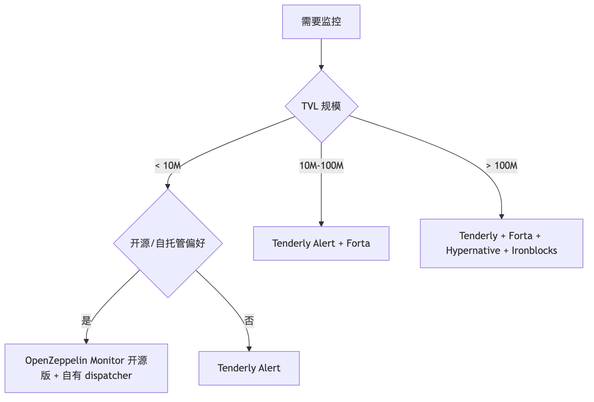
这一节和 §11A 是一条因果链：Validator 想最大化收益 → 必须接 builder 出的高 MEV 区块 → 但 validator 不能裸信任 builder（看到 tx 内容后可拒签）→ 需要 commit-reveal + relay 当中间人 → 这就是 mev-boost → 但 relay 自身也是信任假设 → ePBS / SUAVE 想消除它。理解这条链才能解释为什么 §11A 的 solo staking 流程末尾要配 mev-boost，以及为什么 DVT 在 validator 安全模型里出现。
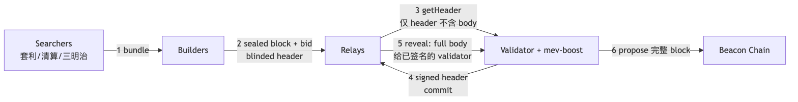
四个角色：Searcher 把 mempool tx + 套利组成 bundle；Builder 接 bundle 优化排序出价；Relay 当中间人防 builder 偷信息；mev-boost 是 validator 侧 sidecar，替代客户端默认本地 builder。
commit-reveal 两阶段：第 3-4 步 validator 看到的是 blinded header（只有 state root、tx root、tip 数额，没有具体 tx 列表），先用 BLS 签 header（commit）；第 5 步 relay 确认 validator 已签名后才揭示完整 body（reveal）。这套机制防止 validator "看到内容后挑利己 block 而拒签其他"——一旦签了 header 就必须 propose，否则被 slashing。ePBS 想原生化的就是这个机制（§11.4）。
| Relay | 市占 (payload) | 审查模式 | 备注 |
|---|---|---|---|
| relay.ultrasound.money | 33.92% | non-censoring | 占据头把交椅 |
| titanrelay.xyz | 24.19% | non-censoring | 第二, BuilderNet 体系 |
| bloxroute.max-profit.blxrbdn.com | 14.67% | non-censoring | bloxroute 老牌 |
| aestus.live | 10.03% | non-censoring | 社区运营 |
| bloxroute.regulated.blxrbdn.com | 9.07% (波动大，见下注) | OFAC 合规 | 合规需求选这个 |
| boost-relay.flashbots.net | 4.22% | non-censoring | Flashbots 老牌, 市占下降 |
bloXroute regulated 9.07% 仅为 2026-04-02 单日截图，该 relay 月度市占波动较大（历史区间约 5-15%，受合规客户集中度与单月制裁名单变动影响）。选型、合规审计、SLA 评估前请用 relayscan.io 复核当前 28 天滚动数据，不要直接引用本表数字做决策。
来源: relayscan.io 2026-04-02 数据, Flashbots Updated MEV-Boost relay settings
| Builder | 市占 | 类型 | 关联 Relay | 备注 |
|---|---|---|---|---|
| beaverbuild.org | 大头 (与 rsync 合计 50%+) | 私有 | TitanRelay / 自有 | 性能最优, BuilderNet 体系 |
| rsync-builder.xyz | 中等 | 私有 | bloXroute / TitanRelay | rsync teams, 多地理冗余 |
| Titan Builder | 第二大 | 私有 | TitanRelay | TitanRelay 体系内 |
| bloXroute max-profit/regulated | 中等 | 私有 | bloxroute relay | 合规/非合规两条线 |
| Flashbots builder | 小, 做 fallback | 公共开源 | Flashbots relay | 历史最久, 开源可自审 |
| Eden / Manifold / Penguin Build | 小 | 私有 | 多 relay | OFA / 新进入者 |
ePBS 解决的问题：当前 relay 是 trust 节点，它知道所有 bundle 内容，relay 串通 builder 可前置/偷 MEV。方案：把 PBS 写进协议——validator 通过链上 commitment + reveal 直接拿 builder block，不再需要 relay。
Glamsterdam（2026 H1）= ePBS + BAL（Block Access Lists，并行执行）+ gas limit 调整，是合并以来最大架构升级。
SUAVE（Single Unified Auction for Value Expression）是 Flashbots 另一条解题思路——让 builder 拍卖去中心化，2026 仍在 testnet（Rigil → Centauri → 主网）。ePBS 解决"validator 不再需要相信 relay"，SUAVE 解决"builder 不再是中心化巨头"，二者互补不替代。
mev-boost \
-mainnet \
-relay-check \
-relays https://0xac6e77df...@boost-relay.flashbots.net,https://0xa1559a...@relay.ultrasound.money,https://0xb0b07cd...@bloxroute.regulated.blxrbdn.com \
-addr 127.0.0.1:18550
# lighthouse 加 --builder http://127.0.0.1:18550
# 完整可复制. 与 reth + lighthouse compose 同 network 启动即可.
services:
mevboost:
image: flashbots/mev-boost:latest
container_name: mevboost
restart: unless-stopped
networks: [eth]
ports:
- "127.0.0.1:18550:18550"
command:
- -mainnet
- -relay-check
- -addr=0.0.0.0:18550
- -loglevel=info
- -relays=https://0xac6e77dfe25ecd6110b8e780608cce0dab71fdd5ebea22a16c0205200f2f8e2e3ad3b71d3499c54ad14d6c21b41a37ae@boost-relay.flashbots.net
- -relays=https://0xa1559ace749633b997cb3fdacffb890aeebdb0f5a3b6aaa7eeeaf1a38af0a8fe88b9e4b1f61f236d2e64d95733327a62@relay.ultrasound.money
- -relays=https://0xa15b52576bcbf1072f4a011c0f99f9fb6c66f3e1ff321f11f461d15e31b1cb359caa092c71bbded0bae5b5ea401aab7e@aestus.live
- -relays=https://0xb0b07cd0abef743db4260b0ed50619cf6ad4d82064cb4fbec9d3ec530f7c5e6793d9f286c4e082c0244ffb9f2658fe88@bloxroute.regulated.blxrbdn.com
- -relays=https://0xa1cec75a3f0661e99299274182938151e8433c61a19222347ea1313d839229cb4ce4e3e5aa2bdb0204b0fa1a1ae4e87e@titanrelay.xyz
接入 lighthouse:
lighthouse bn \
... 其他参数 ... \
--builder http://mevboost:18550 \
--builder-fallback-skips=3 \
--builder-fallback-skips-per-epoch=8
Protect 是用户侧 RPC（非 builder），tx 直发 builder 网络不进 public mempool，三明治攻击者不可见：
const FLASHBOTS_PROTECT = "https://rpc.flashbots.net/fast";
// fast: 多 builder 竞争, 99% 一块内打包
// default: 仅 Flashbots builder
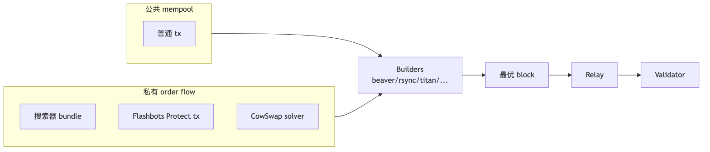
公共 mempool 是三明治主战场；私有 OFA（Flashbots Protect / CoW Protocol / MEV-Share）已经是 stables 大额转账和 DEX swap 的主流路径——CoW Protocol 2025 年单月撮合 ~10B USD，大头都不进 public mempool。
OFAC 制裁地址 (如 Tornado Cash) 能否上链, 取决于 relay + builder 是否过滤:
| 维度 | 2022 (TC 制裁后) | 2024 | 2026-04 |
|---|---|---|---|
| 审查 relay 占比 | ~80% (Flashbots + bloXroute regulated) | 30% | 9% (仅 bloXroute regulated) |
| non-censoring relay 占比 | 20% | 70% | 91% |
| TC 交易上链 latency p50 | ~6 块 | ~2 块 | ~1 块 (随到随包) |
来源: relayscan.io 2026-04 数据, Flashbots Updated MEV-Boost relay settings
默认配至少 4-5 个 non-censoring relay（ultrasound / titan / aestus / flashbots / bloXroute max-profit），bloXroute regulated 按司法管辖区决定。这五个 relay URL 就是下一节 mev-boost 启动命令的输入。
§11 解释了 MEV 链路里 mev-boost 的位置。这里把视角切到 validator 自己：solo staking 全流程→双签风险→web3signer 把 keystore 隔离→DVT 把单点彻底打散→Pectra MaxEB 让规模化更经济→监控。每一步都在解决前一步留下的问题。
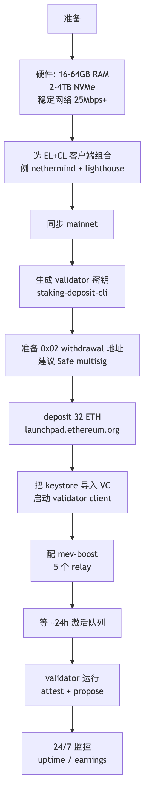
# 1. 在 air-gapped 离线机器生成密钥
git clone https://github.com/ethereum/staking-deposit-cli
cd staking-deposit-cli
./deposit.sh new-mnemonic \
--num_validators 1 \
--chain mainnet \
--eth1_withdrawal_address 0xYOUR_SAFE_MULTISIG \
--execution_address 0xYOUR_SAFE_MULTISIG # Pectra 后, 直接生成 0x02 类型
# 输出: validator_keys/keystore-m_*.json + deposit_data-*.json
# 2. 在 launchpad 上传 deposit_data, 完成 32 ETH 存款
# https://launchpad.ethereum.org/
# 3. 把 keystore 导入 lighthouse VC
lighthouse account validator import \
--network mainnet \
--datadir ~/.lighthouse \
--directory validator_keys
# 4. 启动 VC (与 BN 分进程)
lighthouse vc \
--network mainnet \
--beacon-nodes http://lighthouse-bn:5052 \
--suggested-fee-recipient 0xYOUR_FEE_RECIPIENT \
--builder-proposals \
--prefer-builder-proposals
keystore 的密码极其重要（丢了等于 32 ETH 锁住，但只能正常 exit，不会丢钱）。把 mnemonic + keystore-password 用 Shamir Secret Sharing (SSS) 分 5 份, 3-of-5 恢复, 分别存银行保险柜 / 律师 / 父母家。
触发条件: 1. double signing: 同一 slot 签了两份不同 attestation/proposal. 2. surround vote: 新 attestation 时间区间包住已有 attestation.
罚则: 立即 1 ETH 削减 + 强制退出, correlation penalty 0.5-32 ETH.
| 防御 | 工具 | 关键设置 |
|---|---|---|
| slashing protection DB single source | lighthouse VC / web3signer | 永远不要复制 keystore 到第二台机器同时跑 |
| doppelganger detection | lighthouse --enable-doppelganger-protection |
启动时延迟 2 epoch, 检测网络上是否有同 pubkey 在出 attestation |
| anti-slasher 监控 | beaconcha.in alerts / 自建 prometheus | pubkey 状态变 slashed 立即 PagerDuty |
# lighthouse VC 必加
lighthouse vc \
--enable-doppelganger-protection \
--slashing-protection-history-substantive
如果你想从 prysm 切到 lighthouse, 必须 用 EIP-3076 slashing protection 标准 JSON 导出导入, 否则极易双签:
# 老 prysm 导出
prysmctl validator slashing-protection-history export \
--datadir=/path/to/prysm \
--slashing-protection-export-dir=/path/to/export.json
# 新 lighthouse 导入
lighthouse account validator slashing-protection import /path/to/export.json
2024 年至少 3 次大型 slashing 事件都是"误以为只切换了 EL, 没切换 VC"或"运维迁移没导出 slashing DB"所致。单次损失 7-32 ETH 不等。这步省不得。
slashing DB 必须 single-source-of-truth，但 keystore 直接放 VC 进程意味着每多一台 VC 副本就多一份 slashing 风险。web3signer 把签名抽成独立服务——VC 只缓存 pubkey 列表，签名经 HTTP 到 web3signer，多副本 VC 共享一个 web3signer + 一个 slashing DB，物理上消除"两台机器同时签"的可能。
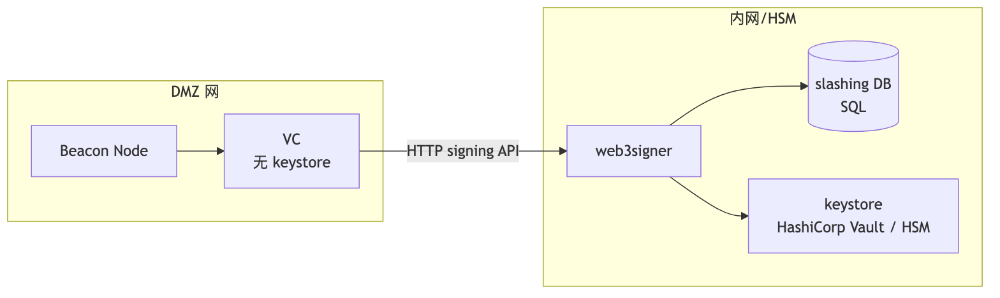
HSM 接入：YubiHSM 2 或 AWS CloudHSM，web3signer 走 PKCS#11。机构方案到此为止；DAO 和大型 staker 还要再向前一步——把 key 本身拆掉。
web3signer 仍是单 key 单服务，机器/管理员仍是单点。DVT 把 validator key 拆成 N 份给 M 个 operator，t-of-N 阈值签名，同时解决两件事：(1) 单点失败——一台机器宕机不影响出块；(2) 双签需 t 个 operator 同时作恶才发生。
| 项目 | 阈值默认 | 共识层 | 主网状态 (2026-04) | 适合 |
|---|---|---|---|---|
| Obol Network | 4-of-6 / 5-of-7 | Charon (basic + QBFT) | mainnet alpha+, Lido Simple DVT 集成 | DAO / 大型 staker / Lido NO |
| SSV Network | 4-of-7 / 7-of-10 | SSV protocol (Istanbul BFT) | permissionless mainnet | 公开 operator 市场 / 个人 |
| Diva Staking | 4-of-6 (LSD-on-DVT) | 自有 | mainnet 较新, LSD 协议 | 想发自己 LSD 的项目 |
来源: Obol Road to Mainnet, SSV permissionless mainnet (The Block), Lido SimpleDVT phase
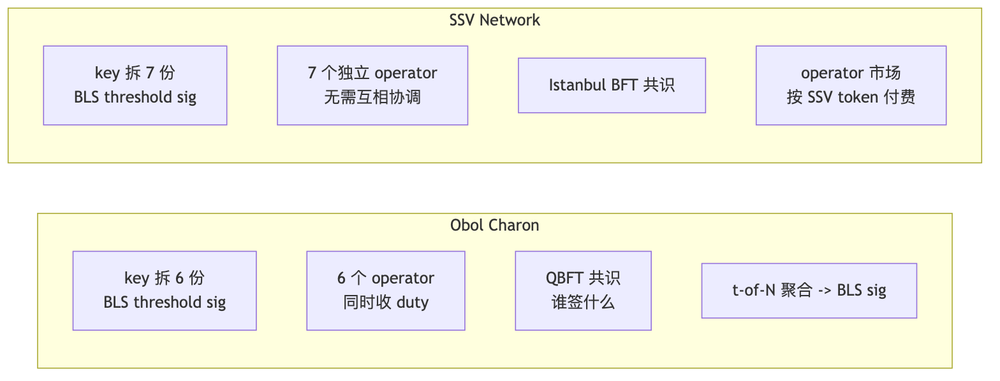
2025-Q3: ~547,968 ETH (17,124 validators) 在 DVT 上, 占总 staked ETH ~1.5%, Lido Simple DVT 占其中过半.
DVT 解决 key 拆分，但 1000 ETH staker 仍需 32 个 validator——32 套 keystore、32 套 slashing DB、32 个 attestation/proposal 流量。Pectra（主网 2025-05-07）的 EIP-7251 把单 validator 上限从 32 ETH 提到 2048 ETH，让规模化运营的边际成本急剧下降。这是为什么 §11A.4 DVT 表里 Lido SimpleDVT 是主用户：DVT + MaxEB 一起部署才是机构 staker 的最优解。
| 维度 | 0x01 (旧默认) | 0x02 (Pectra 后推荐) |
|---|---|---|
| MaxEB | 32 ETH (超出强制 partial withdraw) | 2048 ETH |
| 复利 | 否 (rewards 自动取出, 不再赚利息) | 是 |
| 多 validator 合并 | 不能 | 能 (consolidate 操作) |
| 运营成本 (1000 ETH staker) | 32 个 validator (32 套机器或 keystore) | 1 个 (2048 ETH 上限内) |
# 1. 检查现有 validator credentials 类型
curl -s http://localhost:5052/eth/v1/beacon/states/head/validators/$VALIDATOR_INDEX | jq '.data.validator.withdrawal_credentials'
# 0x01... 表示需要升级
# 2. 用 staking-deposit-cli 生成 BLS-to-execution change (EIP-7002 自助升级)
./deposit.sh generate-bls-to-execution-change \
--chain mainnet \
--mnemonic "your validator mnemonic" \
--bls_withdrawal_credentials_list 0xCURRENT_BLS_CRED \
--validator_start_index 0 \
--validator_indices VALIDATOR_INDEX_LIST \
--execution_address 0xYOUR_NEW_0x02_ADDRESS
# 输出 bls_to_execution_changes-*.json
# 3. broadcast 到 beacon
curl -X POST http://localhost:5052/eth/v1/beacon/pool/bls_to_execution_changes \
-H 'Content-Type: application/json' \
--data @bls_to_execution_changes.json
# 4. 等下个 epoch 链上确认
来源: EthStaker Pectra Features, Markaicode EIP-7251 upgrade guide
# 把 validator 0x6781 合并到 0x4242 (同一 0x02 credentials)
# 通过 EIP-7002 / EIP-7251 提交 consolidation request
cast send --rpc-url $RPC \
--account deployer \
$CONSOLIDATION_CONTRACT_ADDRESS \
"consolidate(address,bytes,bytes)" \
$WITHDRAWAL_ADDRESS \
0xSOURCE_PUBKEY \
0xTARGET_PUBKEY
合并后: source 进入 exit queue; target 收到全部 ETH; 余额上限 2048 ETH.
Lido / Coinbase / Kraken 在 2025-Q4 大批量 consolidate, 单月 active validator 数掉 ~16000 个但总 ETH 不变。协议级降本：同样 staking 量但只需 1/64 attestation/proposal 流量, 减轻共识层带宽压力。
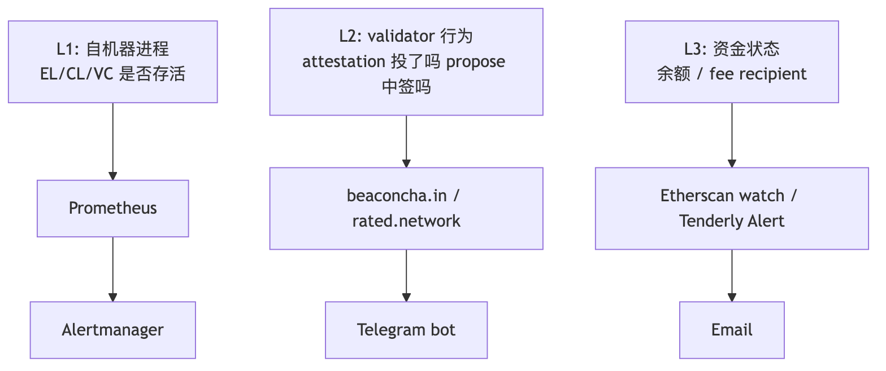
# prometheus.yml 关键 scrape
- job_name: lighthouse-bn
static_configs:
- targets: ['lighthouse-bn:5054']
- job_name: lighthouse-vc
static_configs:
- targets: ['lighthouse-vc:5064']
- job_name: nethermind
static_configs:
- targets: ['nethermind:9091']
- job_name: mev-boost
static_configs:
- targets: ['mev-boost:18550']
# alert 规则示例 (alerts.yml)
groups:
- name: validator
rules:
- alert: ValidatorOffline
expr: up{job="lighthouse-vc"} == 0
for: 2m
labels: { severity: critical }
- alert: MissedAttestation
expr: increase(validator_monitor_attestation_in_aggregate_total[1h]) < 50
for: 30m
labels: { severity: warning }
- alert: ProposerMiss
expr: increase(validator_monitor_proposer_failed_total[6h]) > 0
for: 1m
labels: { severity: critical }
- alert: ELSyncLag
expr: nethermind_sync_lag_blocks > 10
for: 5m
labels: { severity: warning }
| 服务 | 功能 | 适合 |
|---|---|---|
| beaconcha.in alerts | pubkey 状态变化、missed slot、slashing | 个人 / 小团队 |
| rated.network | validator effectiveness 评分、operator 排行 | 中型 staker / 想买专业服务 |
| Lido Reasons | NO 级别监控 | Lido NO |
| Vouch (Attestant) | enterprise validator client + 内置监控 | 机构 |
至少装 beaconcha.in 的 Telegram bot 监控 (免费)。一个 missed proposal = $30-100 损失。
| 维度 | Foundry | Hardhat 3 (beta, production-ready) | Hardhat 2 |
|---|---|---|---|
| 内核语言 | Rust | TypeScript + 部分 Rust 内核 | Node.js |
| Solidity 测试 | yes (forge test) | yes (Foundry-compatible Solidity tests) | 间接 (hardhat-foundry plugin) |
| 编译速度 (50 测试) | 2-4s | 5-8s | 18-25s |
| Fuzz | yes | yes (Foundry-compat) | 间接 |
| Invariant | yes | yes (Foundry-compat) | 否原生 |
| 主网 fork | anvil | hardhat node 3 | hardhat node 2 |
| 部署语言 | Solidity (forge script) | TypeScript | TypeScript |
| Verify | forge verify-contract | hardhat-verify | hardhat-verify |
| viem 集成 | viem 可独立使用 | hardhat-viem plugin (Viem Toolbox 一部分) | 同 v2 plugin |
| 适合 | 协议层, 安全审计, 性能极致 | 现代 JS 团队, 想要 Foundry 测试 + JS DX | 老项目, 大量 plugin 依赖 |
2026-04 更新: Hardhat 3 已 production-ready (beta 状态), 可迁移。主要变化: 内置 Foundry-compatible Solidity 测试 (可在 Hardhat 项目直接写 forge 风格的 fuzz/invariant), 顶层 viem 集成, 测试速度大幅提升。来源: Hardhat 3 What's New, Beta status。
2026-04 推荐: - 新项目: Foundry, 复杂 deploy 链 / 多链可加 Hardhat 3. - Hardhat 2 项目: 升级 Hardhat 3 (production-ready), 不再需要 hardhat-foundry plugin. - Truffle: 已弃用 (ConsenSys 2023-09), 勿用. - ApeWorx (Python): Vyper / Python 团队, 生态较小. - Brownie (Python): 停止维护, 不推荐.
来源: Hardhat 3 docs, Medium Foundry vs Hardhat 2026, Chainstack performance
| 工具 | 启动 | 内存 | fork mainnet | 共享给同事 | 适用 |
|---|---|---|---|---|---|
| anvil (Foundry) | anvil |
极小 | anvil --fork-url |
否 (本地) | 单机开发, CI |
| hardhat node 2/3 | npx hardhat node |
较大 (Node.js) | --fork |
否 | JS 团队, 与 hardhat-deploy 集成 |
| Tenderly Devnet | 控制台/CLI 创建 | 0 (托管) | 持续 fork | 是 (URL 共享) | 团队联调, demo |
三人团队联调 DeFi 协议, 不要每人本地 anvil 各自 state 不同步。直接 Tenderly Devnet, $0 free tier 够用。
Rust / C / C++ 写合约, 编译 WASM 与 EVM 共存. 2026-04: Rust SDK v0.10+ (OpenZeppelin rust-contracts-stylus), 计算密集场景 10-100x 快, 初始化 ~10000 gas, 调用 2-10x 便宜, 与 Solidity 合约无缝互调.
适用: ZK 验证 / ML 推理 / 加密哈希 / 定制 EC 曲线. 不适用简单 ERC20 (Solidity 更轻量).
每个 PR 都跑一遍 forge fmt + forge test + coverage + Slither/Aderyn 是合约项目最低标准；release tag 才跑 invariant heavy fuzz、Halmos 符号执行、verify + 上链广播。下面拆三层：流水线全景图、关键设计点、可复制的完整模板。
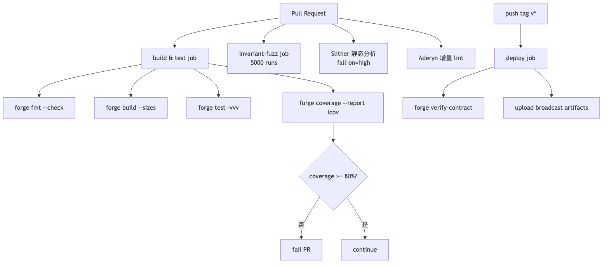
见 code/03-foundry-github-action/.github/workflows/foundry.yml.
permissions: contents: read, pull-requests: write: 最小权限, 能贴 coverage 评论但不能改代码.env: FOUNDRY_PROFILE: ci: 切 [profile.ci], fuzz/invariant 跑更多 runs.submodules: recursive: forge install 用 git submodule, 缺此行依赖会丢.version: stable: 不用 nightly, CI 重现性优先.forge build --sizes: 输出字节码大小, 24KB 限制 (EIP-170, runtime code) 临近提前预警；同时注意 EIP-3860 (Shanghai) initcode 上限 49152 B (MAX_INITCODE_SIZE = 2 × MAX_CODE_SIZE) 与每 32 B initcode 收 2 gas 的额外费用——大型 constructor / 大量 immutable / CREATE2 factory 容易超 initcode 上限即便 runtime 还在 24KB 内，建议 CI 同时检查 deploy bytecode 长度.forge test -vvv: 失败时直接看 EVM opcode 调用栈.FOUNDRY_INVARIANT_RUNS: 5000: 仅 PR 触发, 跑 30-45 min.on.push.tags: ['v*']: deploy job 仅 release tag 触发.--slow: 等 receipt 才发下一笔, 防 nonce 错乱.upload-artifact broadcast/: 含每笔 tx hash + 地址, 90 天保留.crytic/slither-action@v0.4.0, 速度快, 默认推荐.cyfrin/aderyn-action.forge test 兼容语法, 能找 fuzz 找不到的 deep bug. 慢 (5-30 min/test), 仅 release tag 跑.| 优化 | 节省时间 |
|---|---|
actions/cache 缓存 ~/.foundry, lib/, out/ |
60-80% build 时间 |
concurrency.cancel-in-progress: true 取消旧 PR run |
节省 runner 用量 |
| 分离 build 和 fuzz 两个 job, 让 fuzz 仅 PR 跑 | main push 节省 30 min |
| 用 self-hosted runner (M2 Mac mini / Hetzner CCX 2GB ARM) | 比 GitHub free runner 快 2-3x, 月成本 ¥150 |
# .github/workflows/ci.yml
name: One-shot CI
permissions:
contents: read
pull-requests: write
security-events: write # 上传 SARIF 给 GitHub code scanning
on:
push:
branches: [main]
pull_request:
branches: [main]
workflow_dispatch:
concurrency:
group: ci-${{ github.ref }}
cancel-in-progress: true
env:
FOUNDRY_PROFILE: ci
jobs:
# ---------------------------------------------------------------
# job 1: fmt + build + unit test + coverage
# ---------------------------------------------------------------
build-test:
name: build & test
runs-on: ubuntu-latest
timeout-minutes: 25
steps:
- uses: actions/checkout@v4
with: { submodules: recursive, persist-credentials: false }
- uses: foundry-rs/foundry-toolchain@v1
with: { version: stable }
- name: cache foundry
uses: actions/cache@v4
with:
path: |
~/.foundry
./lib
./out
key: foundry-${{ hashFiles('foundry.toml', 'remappings.txt', 'lib/**') }}
- run: forge --version
- run: forge fmt --check
- run: forge build --sizes
- run: forge test -vvv
env:
FOUNDRY_ETH_RPC_URL: ${{ secrets.MAINNET_RPC_URL }}
- name: coverage (lcov)
run: forge coverage --report lcov --report summary
continue-on-error: true
- name: coverage threshold + PR comment
uses: zgosalvez/github-actions-report-lcov@v4
with:
coverage-files: lcov.info
minimum-coverage: 80
artifact-name: coverage-report
github-token: ${{ secrets.GITHUB_TOKEN }}
update-comment: true
# ---------------------------------------------------------------
# job 2: Slither (Trail of Bits)
# ---------------------------------------------------------------
slither:
name: Slither
runs-on: ubuntu-latest
needs: build-test
timeout-minutes: 15
steps:
- uses: actions/checkout@v4
with: { submodules: recursive, persist-credentials: false }
- uses: foundry-rs/foundry-toolchain@v1
- run: forge build --skip test --build-info
- uses: crytic/slither-action@v0.4.0
id: slither
with:
fail-on: high
slither-args: --filter-paths "lib|test|script" --sarif results.sarif
ignore-compile: true
- name: upload SARIF
if: always()
uses: github/codeql-action/upload-sarif@v3
with:
sarif_file: ${{ steps.slither.outputs.sarif }}
# ---------------------------------------------------------------
# job 3: Aderyn (Cyfrin Rust 静态分析)
# ---------------------------------------------------------------
aderyn:
name: Aderyn
runs-on: ubuntu-latest
needs: build-test
timeout-minutes: 10
steps:
- uses: actions/checkout@v4
with: { submodules: recursive, persist-credentials: false }
- uses: foundry-rs/foundry-toolchain@v1
- run: forge build --skip test
- name: install Aderyn
run: |
curl -L https://github.com/Cyfrin/aderyn/releases/latest/download/aderyn-installer.sh | bash
echo "$HOME/.cyfrin/bin" >> $GITHUB_PATH
- name: run Aderyn
run: aderyn . --output report.md --no-snippets
- name: upload report
if: always()
uses: actions/upload-artifact@v4
with:
name: aderyn-report
path: report.md
- name: post PR comment
if: github.event_name == 'pull_request'
uses: marocchino/sticky-pull-request-comment@v2
with:
path: report.md
# ---------------------------------------------------------------
# job 4: invariant + heavy fuzz (仅 PR)
# ---------------------------------------------------------------
invariant:
name: invariant + heavy fuzz
runs-on: ubuntu-latest
needs: build-test
if: github.event_name == 'pull_request'
timeout-minutes: 45
env:
FOUNDRY_INVARIANT_RUNS: "5000"
FOUNDRY_INVARIANT_DEPTH: "25"
FOUNDRY_FUZZ_RUNS: "10000"
steps:
- uses: actions/checkout@v4
with: { submodules: recursive, persist-credentials: false }
- uses: foundry-rs/foundry-toolchain@v1
- run: forge test --match-test invariant -vvv
- run: forge test --match-test fuzz -vv
# ---------------------------------------------------------------
# job 5: Halmos 符号执行 (仅 release tag)
# ---------------------------------------------------------------
halmos:
name: Halmos symbolic
runs-on: ubuntu-latest
needs: build-test
if: startsWith(github.ref, 'refs/tags/v')
timeout-minutes: 60
steps:
- uses: actions/checkout@v4
with: { submodules: recursive, persist-credentials: false }
- uses: foundry-rs/foundry-toolchain@v1
- uses: actions/setup-python@v5
with: { python-version: "3.12" }
- run: pip install halmos
- run: halmos --solver-timeout-assertion 60000 --loop 10
Halmos 跑 60 分钟正常（符号执行复杂度爆炸）。仅 release tag 触发，不堵 PR。日常 PR 走 Slither + Aderyn + invariant 已足够。
- name: setup Tenderly Virtual TestNet
id: vnet
uses: Tenderly/vnet-github-action@v1
with:
access_key: ${{ secrets.TENDERLY_ACCESS_KEY }}
project_name: my-project
account_name: my-team
network_id: 1 # mainnet fork
testnet_name: pr-${{ github.event.pull_request.number }}
- name: run integration tests on fork
run: |
forge test --fork-url ${{ steps.vnet.outputs.rpc_url }} \
--match-path 'test/integration/**' -vv
真实 mainnet 状态 + 完整 trace + 共享 explorer URL, 优于纯 anvil fork.
来源: Tenderly vnet-github-action, Tenderly Virtual TestNet 文档
§13 流水线最后一步是 --broadcast 上链——这步背后的私钥是协议方最大的攻击面。本节用一张信任模型表 + 三条主线（Safe + 硬件钱包给 admin / KMS + OIDC 给 CI / 嵌入式钱包给用户）解决"私钥放哪"。
| 方案 | 私钥位置 | 单点失败 | 适合场景 | 2026 推荐度 |
|---|---|---|---|---|
--private-key 0x... |
环境变量 | 是 | 永远不要用 | 0/10 |
| Foundry keystore | AES 加密本地文件 | 看密码强度 | 个人 dev | 6/10 |
| Frame | 桌面 (硬件钱包代理) | 看硬件钱包 | 个人 / 部署 | 8/10 |
| Ledger / Trezor | 物理 U2F | 物理 | 个人 / 治理 multisig | 9/10 |
| Safe (Gnosis) | smart contract multisig | 看签名者集 | 协议 admin / DAO | 10/10 |
| Squads (Solana) | smart contract multisig | 看签名者集 | Solana 同上 | 10/10 (Solana) |
| AWS KMS | KMS, 不可导出 | KMS 可用性 | CI/CD, 服务器签名 | 8/10 |
| Azure Key Vault | Azure | Azure 可用性 | Azure 栈 | 7/10 |
| GCP KMS | GCP | GCP 可用性 | GCP 栈 | 7/10 |
| HashiCorp Vault | 自托管 / HCP | 自管理 | 多云 / on-prem | 8/10 |
| HSM (YubiHSM / AWS CloudHSM) | 物理 | 物理 | 顶级合规 | 9/10 |
| Fireblocks | MPC + Nitro Enclave | MPC threshold | 机构 / 大额 | 10/10 (机构) |
| BitGo | MPC + cold storage | MPC threshold | 机构 / 托管 | 9/10 |
| Turnkey | TEE (AWS Nitro), policy 签名 | TEE 可用性 | embedded / agent 钱包 | 9/10 |
| Web3Auth MPC | 三方 MPC (社交+设备+服务) | 阈值 | 嵌入式钱包 / 社交登录 | 8/10 |
| Privy (Stripe 旗下) | 嵌入式 | TEE | 应用嵌入式钱包 | 9/10 |
| Capsule (Para) | MPC | 阈值 | 嵌入式 + portable | 8/10 |
# Foundry 1.0+ 直接调 AWS KMS
forge script script/Deploy.s.sol \
--rpc-url $RPC_URL \
--aws \
--aws-kms-key-id $KMS_KEY_ID \
--broadcast
KMS Key 设 grant: 仅 GitHub Action OIDC role 能调 sign. 这样 GitHub secret 里没有任何长期凭证.
# .github/workflows/deploy-kms.yml
name: Deploy via KMS (no long-lived secret)
on:
push:
tags: ['v*']
permissions:
contents: read
id-token: write # 关键: 让 GH 给 AWS 颁发短期 OIDC token
jobs:
deploy:
runs-on: ubuntu-latest
environment: mainnet
steps:
- uses: actions/checkout@v4
with:
persist-credentials: false
submodules: recursive
- uses: foundry-rs/foundry-toolchain@v1
- uses: aws-actions/configure-aws-credentials@v4
with:
role-to-assume: arn:aws:iam::123456789012:role/eth-deploy-role
aws-region: us-east-1
- name: forge script with KMS
run: |
forge script script/Deploy.s.sol:DeployScript \
--rpc-url $RPC_URL \
--aws \
--aws-kms-key-id $KMS_KEY_ID \
--broadcast \
--verify \
--etherscan-api-key $ETHERSCAN_API_KEY \
--slow
env:
RPC_URL: ${{ secrets.MAINNET_RPC_URL }}
KMS_KEY_ID: ${{ secrets.KMS_KEY_ID }}
ETHERSCAN_API_KEY: ${{ secrets.ETHERSCAN_API_KEY }}
IAM 角色 trust policy (限定 GitHub repo + branch):
{
"Version": "2012-10-17",
"Statement": [{
"Effect": "Allow",
"Principal": { "Federated": "arn:aws:iam::123456789012:oidc-provider/token.actions.githubusercontent.com" },
"Action": "sts:AssumeRoleWithWebIdentity",
"Condition": {
"StringEquals": {
"token.actions.githubusercontent.com:aud": "sts.amazonaws.com"
},
"StringLike": {
"token.actions.githubusercontent.com:sub": "repo:my-org/my-repo:ref:refs/tags/v*"
}
}
}]
}
要点:
id-token: write + OIDC 联邦, GH 无需长期 AWS access key.sub 限定 refs/tags/v*: 只有 release tag 能拿 deploy role.kms:Sign, 不给 kms:Decrypt / kms:Encrypt.扫描即将签名的 calldata, 模拟执行并自然语言说明 ("这笔会让你转出 100 USDC + 一个 BAYC"), 黑名单拦截已知 drainer. 个人或 admin 必装.
| 项目 | 归属 | 签名延迟 | 信任模型 | 2026 状态 |
|---|---|---|---|---|
| Web3Auth | 已并入 ConsenSys / MetaMask Embedded | ~500ms (MPC) | 三方 MPC (设备 + 社交 + 服务) | 主推 MetaMask Embedded |
| Privy | 已被 Stripe 收购 (2025-06) | TEE 较快 | TEE-based + server wallets | $299/月起 (2500 MAU) |
| Dynamic | 已被 Fireblocks 收购 (2025) | TEE / MPC 可选 | 多模式 | 与 Fireblocks 体系融合 |
| Para (前 Capsule) | 独立 | ~500ms (MPC) | MPC + passkey | $200/月起 (2500 MAU) |
| Turnkey | 独立 | 50-100ms (TEE only) | AWS Nitro Enclave + policy | 速度最快, AI agent 主流 |
| Openfort | 独立 | 125ms | 多模式 | session key + AA 主推 |
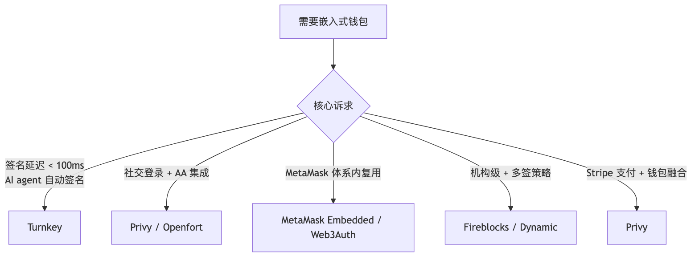
来源: Fireblocks vs Privy vs Turnkey 对比, Openfort - Top embedded wallets 2026
开源 macOS/Linux/Windows app, 把 Ledger / Trezor / Lattice 做成系统级 RPC 端点, dApp 通过 Frame 签名无需每次插拔.
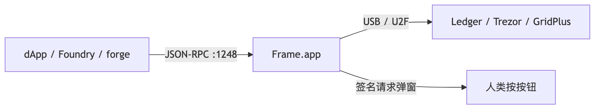
用法: forge script --ledger 或 RPC http://127.0.0.1:1248 -> Frame 弹窗显示 calldata + decoded actions -> 按硬件钱包确认 -> 签名转发.
Frame 比直接 ledgerhq 集成体验好太多。部署 Foundry script 配 Frame, 几乎零摩擦。
实战: 主链用 Etherscan, 长尾 / 自家 L2 用 Blockscout, 前端按 chainId 选 explorer URL.
完整代码见 code/ 与 exercises/。
cd code/01-reth-lighthouse-sepolia
./setup.sh # 生成 jwt + 起容器
docker compose logs -f reth # 等 4-6h sync
curl -s http://127.0.0.1:8545 \
-H 'Content-Type: application/json' \
-d '{"jsonrpc":"2.0","method":"eth_blockNumber","params":[],"id":1}' | jq
生产 (nginx + prom + grafana): docker compose -f docker-compose.full.yml up -d
# .github/workflows/ponder-deploy.yml
name: Deploy Ponder Indexer
on:
push:
branches: [main]
paths:
- "indexer/**"
permissions:
contents: read
id-token: write # OIDC 拿 AWS 临时凭证
jobs:
deploy:
runs-on: ubuntu-latest
timeout-minutes: 15
steps:
- uses: actions/checkout@v4
with:
persist-credentials: false
- uses: pnpm/action-setup@v4
with:
version: 9
- uses: actions/setup-node@v4
with:
node-version: 20
cache: pnpm
cache-dependency-path: indexer/pnpm-lock.yaml
- name: install
working-directory: indexer
run: pnpm install --frozen-lockfile
- name: typecheck + lint
working-directory: indexer
run: pnpm typecheck && pnpm lint
- name: build docker
working-directory: indexer
run: |
docker build -t my-indexer:${{ github.sha }} .
docker tag my-indexer:${{ github.sha }} my-indexer:latest
- name: aws oidc -> ECR push
uses: aws-actions/configure-aws-credentials@v4
with:
role-to-assume: arn:aws:iam::123456789012:role/github-deploy
aws-region: us-east-1
- name: ECR push
run: |
aws ecr get-login-password --region us-east-1 | \
docker login --username AWS --password-stdin 123456789012.dkr.ecr.us-east-1.amazonaws.com
docker tag my-indexer:latest 123456789012.dkr.ecr.us-east-1.amazonaws.com/my-indexer:latest
docker push 123456789012.dkr.ecr.us-east-1.amazonaws.com/my-indexer:latest
- name: ECS deploy
run: |
aws ecs update-service \
--cluster prod \
--service ponder-indexer \
--force-new-deployment
cd code/02-ponder-erc20-indexer
docker compose up -d # 起 postgres
cp .env.example .env # 填你的 RPC URL
pnpm install
pnpm dev
# 打开 http://localhost:42069/graphql 测试
cp code/03-foundry-github-action/.github/workflows/foundry.yml \
<your-foundry-repo>/.github/workflows/foundry.yml
git push
# Settings -> Secrets: MAINNET_RPC_URL, ETHERSCAN_API_KEY, DEPLOYER_PK
cd code/04-tenderly-alert && ./upload-source.sh
cd code/05-helios-light-client
ALCHEMY_URL=https://eth-mainnet.g.alchemy.com/v2/YOUR_KEY ./run-helios.sh
bun run verify-balance.ts # 另一终端
见 exercises/01-hardware-cost-calculator/calc.ts. 答案: ANSWER.md.
要点: 全节点 ¥10000/年 自建; archive ¥14000/年; 云对照 ¥42000/年. NVMe 是核心成本, archive 必须企业级 / 高端 TLC.
见 exercises/02-forta-large-transfer-agent/. 答案: ANSWER.md.
要点: 用 filterLog + bigint, 多链复用, labels 做风控级联.
见 exercises/03-foundry-deploy-verify/. 答案: ANSWER.md.
要点: keystore 加密私钥, --slow 防 nonce 错乱, fs_permissions 写 deployments/
(自行作答, 思路提示)
思路: Pool(id, token0, token1, fee), Position(id, owner, pool, liquidity, tickLower, tickUpper), Swap(id, pool, sender, amount0, amount1, sqrtPrice, tick, ts), Mint, Burn, Collect。关系: Pool 1-N Position, Pool 1-N Swap。derived field: 24h volume / TVL。
易踩坑: tick 用 i32 (signed), liquidity 用 BigInt (u128), 不要 BigDecimal 算定价 (精度丢)。
(自行作答, 思路提示)
思路: Sentinel 的 condition (function args/event params) 一对一映射到 Tenderly Alert YAML。Autotask (JS) 改写成 Tenderly Web3 Action (TS, serverless)。Trigger 从 alert callback 改 webhook URL 调 Web3 Action。
关键差异: Tenderly Web3 Action 256 MB / 60s, Autotask 256 MB / 5 min, 长任务要拆。
(自行作答, 思路提示)
思路: 32 validator -> 至少 4 种组合, 每组合 8 个。例: (reth+lighthouse) x 8, (nethermind+teku) x 8, (besu+prysm) x 8, (erigon+nimbus) x 8。
进阶: 跨地理 (US-East / EU-West / Asia), 跨 ISP, 跨电源域。
(自行作答, 思路提示)
思路: jobs 配 paths-filter, 仅修改 contracts/* trigger。fork: forge test --fork-url $MAINNET_RPC_URL --fork-block-number 22000000。覆盖率上 Codecov, PR 自动评论。
(自行作答, 思路提示)
思路: 用 eRPC 配置 (yaml)。upstream 写 [自建 reth, Alchemy, QuickNode, dRPC]。给重 trace 调用单独路由 dRPC (flat 价)。对 eth_call 设 cache 30s。失败自动 fallback。
(自行作答, 思路提示)
思路: viem 的 transport 指 http://127.0.0.1:8545 (Helios), 而非直连 Alchemy。启动时打开 Helios 进程, dApp 通过 http://localhost:8545 透明访问。用户感知不到, 但所有响应都被验证。
传统告警靠规则 (withdraw > 1M USDC), 0day 攻击模式总不在规则集. 2026 趋势: Tenderly / Forta / Hypernative 把链上 tx 流喂 LLM/GNN 学正常模式, 偏离告警. Forta Anomaly Detection bot 2024 年提前 12h 抓到多个 rug pull. 局限: 攻击者可先做 1000 次"正常"操作把基线拉高再发动.
0xa9059cbb... -> "transfer 100 USDC to 0xabc"ABI + 业务描述 -> LLM 自动生成 Ponder schema + handler 初稿. 局限: decimals 差异 / proxy upgrade ABI 变化 / reorg 边界不会自动处理, 必须人工 review.
LLM 能给出能跑的 yaml. 必须人工核查: --http.api 是否含 admin / JWT ro 挂载 / healthcheck / stop_grace_period.
2025 年某 L2 项目 SRE 全员靠 ChatGPT 写脚本, 一次 systemctl daemon-reload 把 mev-boost 重启策略改坏, 4 小时不出块。AI 是放大器, 放大对的也放大错的；没底子用 AI 反而更危险。
| 工具 | 集成位置 | 用途 | 免费 / 付费 |
|---|---|---|---|
| Tenderly AI Calldata Decoder | Tenderly Web Console / Alert | raw input 0xa9059c... -> "transfer 100 USDC to 0xabc" | Tenderly 套餐内 |
| Phalcon AI Explainer | Phalcon Explorer | tx internal call tree -> 自然语言路径 | 免费 |
| Etherscan AI Verify Comments | Etherscan 合约页面 | 合约源码自动加自然语言注释 | 免费 (Etherscan Pro 速率快) |
| Forta Anomaly Detection | Forta network bot | 链上 tx 流喂 GNN 学习正常模式, 偏离即 alert | 公共 bot 免费, 自部署收 FORT |
| Hypernative Pre-cog | Hypernative SaaS | ML 模型预测潜在攻击 (mempool + 链下数据) | enterprise |
| OpenZeppelin Contracts Wizard + AI | wizard.openzeppelin.com | NL -> 安全 ERC20/721/Governor 模板 | 免费 |
| Cursor / Codeium / GitHub Copilot | IDE | Solidity / TS handler 自动补全 | $20/月 |
| Aderyn AI report comment | Cyfrin Aderyn output | 静态分析 finding 加 LLM 解释建议 | 免费 (open-source) |
# CLI 方式 (tenderly v0.16+)
tenderly tx decode \
--network mainnet \
--hash 0xabc...123 \
--use-ai
# 输出: "User swapped 1.5 ETH for 4500 USDC via Uniswap V3 0.3% pool, paying 0.05 ETH gas"
点 "Decompile + AI Notes" (需 Etherscan account/Pro): 函数名猜测 / 关键逻辑摘要 / 可疑模式提示. 正确率约 70%, 仅作初筛.
goldsky generate subgraph \
--abi ./MyToken.abi.json \
--description "track all transfers and aggregate daily volume per user"
# 输出: subgraph.yaml + schema.graphql + handler.ts
局限: reorg / decimals / proxy upgrade 不会自动处理, 必须人工 review。
--http.api 不含 adminrestart: unless-stoppedstop_grace_period: 5m本模块第 18 节预览了 AI 在告警、calldata 解码、schema 生成上的应用。下一模块 12-AI×Web3 系统讲解 AI 工具如何深度融入 Web3 开发全链路，包括智能合约审计辅助、链上数据分析自动化与 AI Agent 钱包。